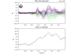
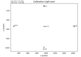
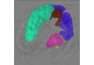
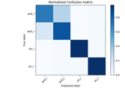
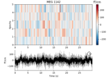
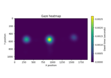
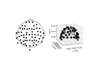

mne.Epochs#
- class mne.Epochs(raw, events=None, event_id=None, tmin=-0.2, tmax=0.5, baseline=(None, 0), picks=None, preload=False, reject=None, flat=None, proj=True, decim=1, reject_tmin=None, reject_tmax=None, detrend=None, on_missing='raise', reject_by_annotation=True, metadata=None, event_repeated='error', verbose=None)[source]#
Epochs extracted from a Raw instance.
- Parameters:
- raw
Rawobject An instance of
Raw.Note
If
rawcontains annotations,Epochscan be constructed aroundraw.annotations.onset, but note that the durations of the annotations are ignored in this case.- events
ndarrayofint, shape (n_events, 3) The identity and timing of experimental events, around which the epochs were created. See events for more information.Events that dont match the events of interest as specified by
event_idwill be marked asIGNOREDin the drop log.Changed in version 1.7: Allow
events=Noneto useraw.annotations.onsetas the source of epoch times.- event_id
int|listofint|dict|str|listofstr|None The id of the events to consider. If dict, the keys can later be used to access associated events. Example: dict(auditory=1, visual=3). If int, a dict will be created with the id as string. If a list of int, all events with the IDs specified in the list are used. If a str or list of str,
eventsmust beNoneto use annotations and then the IDs must be the name(s) of the annotations to use. If None, all events will be used and a dict is created with string integer names corresponding to the event id integers.- tmin, tmax
float Start and end time of the epochs in seconds, relative to the time-locked event. The closest or matching samples corresponding to the start and end time are included. Defaults to
-0.2and0.5, respectively.- baseline
None|tupleof length 2 The time interval to consider as baseline when applying baseline correction. If
None, do not apply baseline correction. If a tuple(a, b), the interval is betweenaandb(in seconds), including the endpoints. IfaisNone, the beginning of the data is used; and ifbisNone, it is set to the end of the data. If(None, None), the entire time interval is used.Note
The baseline
(a, b)includes both endpoints, i.e. all timepointstsuch thata <= t <= b.Correction is applied to each epoch and channel individually in the following way:
Calculate the mean signal of the baseline period.
Subtract this mean from the entire epoch.
Defaults to
(None, 0), i.e. beginning of the the data until time point zero.- picks
str| array_like |slice|None Channels to include. Slices and lists of integers will be interpreted as channel indices. In lists, channel type strings (e.g.,
['meg', 'eeg']) will pick channels of those types, channel name strings (e.g.,['MEG0111', 'MEG2623']will pick the given channels. Can also be the string values'all'to pick all channels, or'data'to pick data channels. None (default) will pick all channels. Note that channels ininfo['bads']will be included if their names or indices are explicitly provided.- preloadbool
Load all epochs from disk when creating the object or wait before accessing each epoch (more memory efficient but can be slower).
- reject
dict|None Reject epochs based on maximum peak-to-peak signal amplitude (PTP), i.e. the absolute difference between the lowest and the highest signal value. In each individual epoch, the PTP is calculated for every channel. If the PTP of any one channel exceeds the rejection threshold, the respective epoch will be dropped.
The dictionary keys correspond to the different channel types; valid keys can be any channel type present in the object.
Example:
reject = dict(grad=4000e-13, # unit: T / m (gradiometers) mag=4e-12, # unit: T (magnetometers) eeg=40e-6, # unit: V (EEG channels) eog=250e-6 # unit: V (EOG channels) )
Note
Since rejection is based on a signal difference calculated for each channel separately, applying baseline correction does not affect the rejection procedure, as the difference will be preserved.
Note
To constrain the time period used for estimation of signal quality, pass the
reject_tminandreject_tmaxparameters.If
rejectisNone(default), no rejection is performed.- flat
dict|None Reject epochs based on minimum peak-to-peak signal amplitude (PTP). Valid keys can be any channel type present in the object. The values are floats that set the minimum acceptable PTP. If the PTP is smaller than this threshold, the epoch will be dropped. If
Nonethen no rejection is performed based on flatness of the signal.Note
To constrain the time period used for estimation of signal quality, pass the
reject_tminandreject_tmaxparameters.- projbool | delayed
Apply SSP projection vectors. If proj is delayed and reject is not None the single epochs will be projected before the rejection decision, but used in unprojected state if they are kept. This way deciding which projection vectors are good can be postponed to the evoked stage without resulting in lower epoch counts and without producing results different from early SSP application given comparable parameters. Note that in this case baselining, detrending and temporal decimation will be postponed. If proj is False no projections will be applied which is the recommended value if SSPs are not used for cleaning the data.
- decim
int Factor by which to subsample the data.
Warning
Low-pass filtering is not performed, this simply selects every Nth sample (where N is the value passed to
decim), i.e., it compresses the signal (see Notes). If the data are not properly filtered, aliasing artifacts may occur. See Resampling and decimating data for more information.- reject_tmin, reject_tmax
float|None Start and end of the time window used to reject epochs based on peak-to-peak (PTP) amplitudes as specified via
rejectandflat. The defaultNonecorresponds to the first and last time points of the epochs, respectively.Note
This parameter controls the time period used in conjunction with both,
rejectandflat.- detrend
int|None If 0 or 1, the data channels (MEG and EEG) will be detrended when loaded. 0 is a constant (DC) detrend, 1 is a linear detrend. None is no detrending. Note that detrending is performed before baseline correction. If no DC offset is preferred (zeroth order detrending), either turn off baseline correction, as this may introduce a DC shift, or set baseline correction to use the entire time interval (will yield equivalent results but be slower).
- on_missingraise | warn | ignore
What to do if one or several event ids are not found in the recording. Valid keys are raise | warn | ignore Default is
'raise'. If'warn', it will proceed but warn; if'ignore', it will proceed silently.Note
If none of the event ids are found in the data, an error will be automatically generated irrespective of this parameter.
- reject_by_annotationbool
Whether to reject based on annotations. If
True(default), epochs overlapping with segments whose description begins with'bad'are rejected. IfFalse, no rejection based on annotations is performed.- metadatainstance of
pandas.DataFrame|None A
pandas.DataFramespecifying metadata about each epoch. If notNone,len(metadata)must equallen(events). For save/load compatibility, theDataFramemay only containstr,int,float, andboolvalues. If notNone, then pandas-style queries may be used to select subsets of data, seemne.Epochs.__getitem__(). When the Epochs object is subsetted, the metadata is subsetted accordingly, and the row indices will be modified to matchEpochs.selection.New in v0.16.
- event_repeated
str How to handle duplicates in
events[:, 0]. Can be'error'(default), to raise an error, drop to only retain the row occurring first in the events, or'merge'to combine the coinciding events (=duplicates) into a new event (see Notes for details).New in v0.19.
- verbosebool |
str|int|None Control verbosity of the logging output. If
None, use the default verbosity level. See the logging documentation andmne.verbose()for details. Should only be passed as a keyword argument.
- raw
- Attributes:
- info
mne.Info The
mne.Infoobject with information about the sensors and methods of measurement.- event_id
dict Mapping from condition descriptions (strings) to integer event codes.
ch_nameslistofstrChannel names.
- selection
ndarray Array of indices of selected epochs (i.e., epochs that were not rejected, dropped, or ignored).
- preloadbool
Indicates whether epochs are in memory.
- drop_log
tupleoftuple A tuple of the same length as the event array used to initialize the Epochs object. If the i-th original event is still part of the selection, drop_log[i] will be an empty tuple; otherwise it will be a tuple of the reasons the event is not longer in the selection, e.g.:
- IGNORED
If it isnt part of the current subset defined by the user
- NO_DATA or TOO_SHORT
If epoch didnt contain enough data names of channels that exceeded the amplitude threshold
- EQUALIZED_COUNTS
- USER
For user-defined reasons (see
drop()).
When dropping based on flat or reject parameters the tuple of reasons contains a tuple of channels that satisfied the rejection criteria.
filenamestrThe filename.
timesndarrayTime vector in seconds.
- info
Methods
__contains__(ch_type)Check channel type membership.
__getitem__(item)Return an Epochs object with a copied subset of epochs.
__iter__()Facilitate iteration over epochs.
__len__()Return the number of epochs.
add_annotations_to_metadata([overwrite])Add raw annotations into the Epochs metadata data frame.
add_channels(add_list[,force_update_info])Append new channels to the instance.
add_proj(projs[,remove_existing,verbose])Add SSP projection vectors.
add_reference_channels(ref_channels)Add reference channels to data that consists of all zeros.
anonymize([daysback,keep_his,verbose])Anonymize measurement information in place.
apply_baseline([baseline,verbose])Baseline correct epochs.
apply_function(fun[,picks,dtype,n_jobs,...])Apply a function to a subset of channels.
apply_hilbert([picks,envelope,n_jobs,...])Compute analytic signal or envelope for a subset of channels/vertices.
apply_proj([verbose])Apply the signal space projection (SSP) operators to the data.
as_type([ch_type,mode])Compute virtual epochs using interpolated fields.
average([picks,method,by_event_type])Compute an average over epochs.
compute_psd([method,fmin,fmax,tmin,...])Perform spectral analysis on sensor data.
compute_tfr(method,freqs,*[,tmin,tmax,...])Compute a time-frequency representation of epoched data.
copy()Return copy of Epochs instance.
crop([tmin,tmax,include_tmax,verbose])Crop a time interval from the epochs.
decimate(decim[,offset,verbose])Decimate the time-series data.
del_proj([idx])Remove SSP projection vector.
drop(indices[,reason,verbose])Drop epochs based on indices or boolean mask.
drop_bad([reject,flat,verbose])Drop bad epochs without retaining the epochs data.
drop_channels(ch_names[,on_missing])Drop channel(s).
drop_log_stats([ignore])Compute the channel stats based on a drop_log from Epochs.
equalize_event_counts([event_ids,method,...])Equalize the number of trials in each condition.
export(fname[,fmt,overwrite,verbose])Export Epochs to external formats.
filter(l_freq,h_freq[,picks,...])Filter a subset of channels/vertices.
Get a list of annotations that occur during each epoch.
get_channel_types([picks,unique,only_data_chs])Get a list of channel type for each channel.
get_data([picks,item,units,tmin,tmax,...])Get all epochs as a 3D array.
Get a DigMontage from instance.
interpolate_bads([reset_bads,mode,origin,...])Interpolate bad MEG and EEG channels.
iter_evoked([copy])Iterate over epochs as a sequence of Evoked objects.
Load the data if not already preloaded.
next([return_event_id])Iterate over epoch data.
pick(picks[,exclude,verbose])Pick a subset of channels.
pick_channels(ch_names[,ordered,verbose])pick_types([meg,eeg,stim,eog,ecg,emg,...])plot([picks,scalings,n_epochs,...])Visualize epochs.
plot_drop_log([threshold,n_max_plot,...])Show the channel stats based on a drop_log from Epochs.
plot_image([picks,sigma,vmin,vmax,...])Plot Event Related Potential / Fields image.
plot_projs_topomap([ch_type,sensors,...])Plot SSP vector.
plot_psd([fmin,fmax,tmin,tmax,picks,...])Plot power or amplitude spectra.
plot_psd_topo([tmin,tmax,fmin,fmax,...])plot_psd_topomap([bands,tmin,tmax,...])plot_sensors([kind,ch_type,title,...])Plot sensor positions.
plot_topo_image([layout,sigma,vmin,vmax,...])Plot Event Related Potential / Fields image on topographies.
rename_channels(mapping[,allow_duplicates,...])Rename channels.
reorder_channels(ch_names)Reorder channels.
resample(sfreq,*[,npad,window,n_jobs,...])Resample data.
Reset the drop_log and selection entries.
save(fname[,split_size,fmt,overwrite,...])Save epochs in a fif file.
savgol_filter(h_freq[,verbose])Filter the data using Savitzky-Golay polynomial method.
set_annotations(annotations[,on_missing,...])Setter for Epoch annotations from Raw.
set_channel_types(mapping,*[,...])Specify the sensor types of channels.
set_eeg_reference([ref_channels,...])Specify which reference to use for EEG data.
set_meas_date(meas_date)Set the measurement start date.
set_montage(montage[,match_case,...])Set EEG/sEEG/ECoG/DBS/fNIRS channel positions and digitization points.
shift_time(tshift[,relative])Shift time scale in epoched or evoked data.
standard_error([picks,by_event_type])Compute standard error over epochs.
subtract_evoked([evoked])Subtract an evoked response from each epoch.
time_as_index(times[,use_rounding])Convert time to indices.
to_data_frame([picks,index,scalings,...])Export data in tabular structure as a pandas DataFrame.
Notes
When accessing data, Epochs are detrended, baseline-corrected, and decimated, then projectors are (optionally) applied.
For indexing and slicing using
epochs[...], seemne.Epochs.__getitem__().All methods for iteration over objects (using
mne.Epochs.__iter__(),mne.Epochs.iter_evoked()ormne.Epochs.next()) use the same internal state.If
event_repeatedis set to'merge', the coinciding events (duplicates) will be merged into a single event_id and assigned a new id_number as:event_id['{event_id_1}/{event_id_2}/...'] = new_id_number
For example with the event_id
{'aud': 1, 'vis': 2}and the events[[0, 0, 1], [0, 0, 2]], the merge behavior will update both event_id and events to be:{'aud/vis': 3}and[[0, 0, 3]]respectively.There is limited support for
Annotationsin theEpochsclass. Currently annotations that are present in theRawobject will be preserved in the resultingEpochsobject, but:It is not yet possible to add annotations to the Epochs object programmatically (via code) or interactively (through the plot window)
Concatenating
Epochsobjects that contain annotations is not supported, and any annotations will be dropped when concatenating.Annotations will be lost on save.
- __contains__(ch_type)[source]#
Check channel type membership.
- Parameters:
- ch_type
str Channel type to check for. Can be e.g.
'meg','eeg','stim', etc.
- ch_type
- Returns:
- inbool
Whether or not the instance contains the given channel type.
Examples
Channel type membership can be tested as:
>>> 'meg' in inst True >>> 'seeg' in inst False
- __getitem__(item) Self[source]#
Return an Epochs object with a copied subset of epochs.
- Parameters:
- item
int|slice| array_like |str See Notes for use cases.
- item
- Returns:
- epochsinstance of
Epochs The subset of epochs.
- epochsinstance of
Notes
Epochs can be accessed as
epochs[...]in several ways:Integer or slice:
epochs[idx]will return anEpochsobject with a subset of epochs chosen by index (supports single index and Python-style slicing).String:
epochs['name']will return anEpochsobject comprising only the epochs labeled'name'(i.e., epochs created around events with the label'name').If there are no epochs labeled
'name'but there are epochs labeled with /-separated tags (e.g.'name/left','name/right'), thenepochs['name']will select the epochs with labels that contain that tag (e.g.,epochs['left']selects epochs labeled'audio/left'and'visual/left', but not'audio_left').If multiple tags are provided as a single string (e.g.,
epochs['name_1/name_2']), this selects epochs containing all provided tags. For example,epochs['audio/left']selects'audio/left'and'audio/quiet/left', but not'audio/right'. Note that tag-based selection is insensitive to order: tags like'audio/left'and'left/audio'will be treated the same way when selecting via tag.List of strings:
epochs[['name_1', 'name_2', ... ]]will return anEpochsobject comprising epochs that match any of the provided names (i.e., the list of names is treated as an inclusive-or condition). If none of the provided names match any epoch labels, aKeyErrorwill be raised.If epoch labels are /-separated tags, then providing multiple tags as separate list entries will likewise act as an inclusive-or filter. For example,
epochs[['audio', 'left']]would select'audio/left','audio/right', and'visual/left', but not'visual/right'.Pandas query:
epochs['pandas query']will return anEpochsobject with a subset of epochs (and matching metadata) selected by the query called withself.metadata.eval, e.g.:epochs["col_a > 2 and col_b == 'foo'"]
would return all epochs whose associated
col_ametadata was greater than two, and whosecol_bmetadata was the string foo. Query-based indexing only works if Pandas is installed andself.metadatais apandas.DataFrame.New in v0.16.
- __iter__()[source]#
Facilitate iteration over epochs.
This method resets the object iteration state to the first epoch.
Notes
This enables the use of this Python pattern:
>>> for epoch in epochs: >>> print(epoch)
Where
epochis given by successive outputs ofmne.Epochs.next().
- __len__()[source]#
Return the number of epochs.
- Returns:
- n_epochs
int The number of remaining epochs.
- n_epochs
Notes
This function only works if bad epochs have been dropped.
Examples
This can be used as:
>>> epochs.drop_bad() >>> len(epochs) 43 >>> len(epochs.events) 43
- add_annotations_to_metadata(overwrite=False)[source]#
Add raw annotations into the Epochs metadata data frame.
Adds three columns to the
metadataconsisting of a list in each row: -annot_onset: the onset of each Annotation within the Epoch relative to the start time of the Epoch (in seconds). -annot_duration: the duration of each Annotation within the Epoch in seconds. -annot_description: the free-form text description of each Annotation.- Parameters:
- overwritebool
Whether to overwrite existing columns in metadata or not. Default is False.
- Returns:
- selfinstance of
Epochs The modified instance (instance is also modified inplace).
- selfinstance of
Notes
New in v1.0.
- add_channels(add_list, force_update_info=False)[source]#
Append new channels to the instance.
- Parameters:
- add_list
list A list of objects to append to self. Must contain all the same type as the current object.
- force_update_infobool
If True, force the info for objects to be appended to match the values in
self. This should generally only be used when adding stim channels for which important metadata wont be overwritten.New in v0.12.
- add_list
- Returns:
See also
Notes
If
selfis a Raw instance that has been preloaded into anumpy.memmapinstance, the memmap will be resized.
- add_proj(projs, remove_existing=False, verbose=None)[source]#
Add SSP projection vectors.
- Parameters:
- projs
list List with projection vectors.
- remove_existingbool
Remove the projection vectors currently in the file.
- verbosebool |
str|int|None Control verbosity of the logging output. If
None, use the default verbosity level. See the logging documentation andmne.verbose()for details. Should only be passed as a keyword argument.
- projs
- Returns:
Examples using
add_proj:
- add_reference_channels(ref_channels)[source]#
Add reference channels to data that consists of all zeros.
Adds reference channels to data that were not included during recording. This is useful when you need to re-reference your data to different channels. These added channels will consist of all zeros.
- Parameters:
- Returns:
- anonymize(daysback=None, keep_his=False, verbose=None)[source]#
Anonymize measurement information in place.
- Parameters:
- daysback
int|None Number of days to subtract from all dates. If
None(default), the acquisition date,info['meas_date'], will be set toJanuary 1, 2000. This parameter is ignored ifinfo['meas_date']isNone(i.e., no acquisition date has been set).- keep_hisbool
If
True,his_idofsubject_infowill not be overwritten. Defaults toFalse.Warning
This could mean that
infois not fully anonymized. Use with caution.- verbosebool |
str|int|None Control verbosity of the logging output. If
None, use the default verbosity level. See the logging documentation andmne.verbose()for details. Should only be passed as a keyword argument.
- daysback
- Returns:
Notes
Removes potentially identifying information if it exists in
info. Specifically for each of the following we use:- meas_date, file_id, meas_id
A default value, or as specified by
daysback.
- subject_info
Default values, except for birthday which is adjusted to maintain the subject age.
- experimenter, proj_name, description
Default strings.
- utc_offset
None.
- proj_id
Zeros.
- proc_history
Dates use the
meas_datelogic, and experimenter a default string.
- helium_info, device_info
Dates use the
meas_datelogic, meta info uses defaults.
If
info['meas_date']isNone, it will remainNoneduring processing the above fields.Operates in place.
New in v0.13.0.
- apply_baseline(baseline=(None, 0), *, verbose=None)[source]#
Baseline correct epochs.
- Parameters:
- baseline
None|tupleof length 2 The time interval to consider as baseline when applying baseline correction. If
None, do not apply baseline correction. If a tuple(a, b), the interval is betweenaandb(in seconds), including the endpoints. IfaisNone, the beginning of the data is used; and ifbisNone, it is set to the end of the data. If(None, None), the entire time interval is used.Note
The baseline
(a, b)includes both endpoints, i.e. all timepointstsuch thata <= t <= b.Correction is applied to each epoch and channel individually in the following way:
Calculate the mean signal of the baseline period.
Subtract this mean from the entire epoch.
Defaults to
(None, 0), i.e. beginning of the the data until time point zero.- verbosebool |
str|int|None Control verbosity of the logging output. If
None, use the default verbosity level. See the logging documentation andmne.verbose()for details. Should only be passed as a keyword argument.
- baseline
- Returns:
- epochsinstance of
Epochs The baseline-corrected Epochs object.
- epochsinstance of
Notes
Baseline correction can be done multiple times, but can never be reverted once the data has been loaded.
New in v0.10.0.
Examples using
apply_baseline:Repairing artifacts with regression
Repairing artifacts with regressionWorking with eye tracker data in MNE-Python
Working with eye tracker data in MNE-Python
- apply_function(fun, picks=None, dtype=None, n_jobs=None, channel_wise=True, verbose=None, **kwargs)[source]#
Apply a function to a subset of channels.
The function
funis applied to the channels defined inpicks. The epochs objects data is modified in-place. If the function returns a different data type (e.g.numpy.complex128) it must be specified using thedtypeparameter, which causes the data type of all the data to change (even if the function is only applied to channels inpicks). The object has to have the data loaded e.g. withpreload=Trueorself.load_data().Note
If
n_jobs> 1, more memory is required aslen(picks) * n_timesadditional time points need to be temporarily stored in memory.Note
If the data type changes (
dtype != None), more memory is required since the original and the converted data needs to be stored in memory.- Parameters:
- fun
callable() A function to be applied to the channels. The first argument of fun has to be a timeseries (
numpy.ndarray). The function must operate on an array of shape(n_times,)ifchannel_wise=Trueand(len(picks), n_times)otherwise. The function must return anndarrayshaped like its input.Note
If
channel_wise=True, one can optionally access the index and/or the name of the currently processed channel within the applied function. This can enable tailored computations for different channels. To use this feature, addch_idxand/orch_nameas additional argument(s) to your function definition.- picks
str| array_like |slice|None Channels to include. Slices and lists of integers will be interpreted as channel indices. In lists, channel type strings (e.g.,
['meg', 'eeg']) will pick channels of those types, channel name strings (e.g.,['MEG0111', 'MEG2623']will pick the given channels. Can also be the string values'all'to pick all channels, or'data'to pick data channels. None (default) will pick all data channels (excluding reference MEG channels). Note that channels ininfo['bads']will be included if their names or indices are explicitly provided.- dtype
numpy.dtype Data type to use after applying the function. If None (default) the data type is not modified.
- n_jobs
int|None The number of jobs to run in parallel. If
-1, it is set to the number of CPU cores. Requires thejoblibpackage.None(default) is a marker for unset that will be interpreted asn_jobs=1(sequential execution) unless the call is performed under ajoblib.parallel_configcontext manager that sets another value forn_jobs. Ignored ifchannel_wise=Falseas the workload is split across channels.- channel_wisebool
Whether to apply the function to each channel in each epoch individually. If
False, the function will be applied to all epochs and channels at once. DefaultTrue.- verbosebool |
str|int|None Control verbosity of the logging output. If
None, use the default verbosity level. See the logging documentation andmne.verbose()for details. Should only be passed as a keyword argument.- **kwargs
dict Additional keyword arguments to pass to
fun.
- fun
- Returns:
- selfinstance of
Epochs The epochs object with transformed data.
- selfinstance of
- apply_hilbert(picks=None, envelope=False, n_jobs=None, n_fft='auto', *, verbose=None)[source]#
Compute analytic signal or envelope for a subset of channels/vertices.
- Parameters:
- picks
str| array_like |slice|None Channels to include. Slices and lists of integers will be interpreted as channel indices. In lists, channel type strings (e.g.,
['meg', 'eeg']) will pick channels of those types, channel name strings (e.g.,['MEG0111', 'MEG2623']will pick the given channels. Can also be the string values'all'to pick all channels, or'data'to pick data channels. None (default) will pick all data channels (excluding reference MEG channels). Note that channels ininfo['bads']will be included if their names or indices are explicitly provided.- envelopebool
Compute the envelope signal of each channel/vertex. Default False. See Notes.
- n_jobs
int|None The number of jobs to run in parallel. If
-1, it is set to the number of CPU cores. Requires thejoblibpackage.None(default) is a marker for unset that will be interpreted asn_jobs=1(sequential execution) unless the call is performed under ajoblib.parallel_configcontext manager that sets another value forn_jobs.- n_fft
int|None|str Points to use in the FFT for Hilbert transformation. The signal will be padded with zeros before computing Hilbert, then cut back to original length. If None, n == self.n_times. If auto, the next highest fast FFT length will be use.
- verbosebool |
str|int|None Control verbosity of the logging output. If
None, use the default verbosity level. See the logging documentation andmne.verbose()for details. Should only be passed as a keyword argument.
- picks
- Returns:
- selfinstance of
Raw,Epochs,EvokedorSourceEstimate The raw object with transformed data.
- selfinstance of
Notes
Parameters
If
envelope=False, the analytic signal for the channels/vertices defined inpicksis computed and the data of the Raw object is converted to a complex representation (the analytic signal is complex valued).If
envelope=True, the absolute value of the analytic signal for the channels/vertices defined inpicksis computed, resulting in the envelope signal.If envelope=False, more memory is required since the original raw data as well as the analytic signal have temporarily to be stored in memory. If n_jobs > 1, more memory is required as
len(picks) * n_timesadditional time points need to be temporarily stored in memory.Also note that the
n_fftparameter will allow you to pad the signal with zeros before performing the Hilbert transform. This padding is cut off, but it may result in a slightly different result (particularly around the edges). Use at your own risk.Analytic signal
The analytic signal x_a(t) of x(t) is:
x_a = F^{-1}(F(x) 2U) = x + i y
where F is the Fourier transform, U the unit step function, and y the Hilbert transform of x. One usage of the analytic signal is the computation of the envelope signal, which is given by e(t) = abs(x_a(t)). Due to the linearity of Hilbert transform and the MNE inverse solution, the enevlope in source space can be obtained by computing the analytic signal in sensor space, applying the MNE inverse, and computing the envelope in source space.
Examples using
apply_hilbert:
Time-frequency on simulated data (Multitaper vs. Morlet vs. Stockwell vs. Hilbert)
Time-frequency on simulated data (Multitaper vs. Morlet vs. Stockwell vs. Hilbert)
- apply_proj(verbose=None)[source]#
Apply the signal space projection (SSP) operators to the data.
- Parameters:
- verbosebool |
str|int|None Control verbosity of the logging output. If
None, use the default verbosity level. See the logging documentation andmne.verbose()for details. Should only be passed as a keyword argument.
- verbosebool |
- Returns:
Notes
Once the projectors have been applied, they can no longer be removed. It is usually not recommended to apply the projectors at too early stages, as they are applied automatically later on (e.g. when computing inverse solutions). Hint: using the copy method individual projection vectors can be tested without affecting the original data. With evoked data, consider the following example:
projs_a = mne.read_proj('proj_a.fif') projs_b = mne.read_proj('proj_b.fif') # add the first, copy, apply and see ... evoked.add_proj(a).copy().apply_proj().plot() # add the second, copy, apply and see ... evoked.add_proj(b).copy().apply_proj().plot() # drop the first and see again evoked.copy().del_proj(0).apply_proj().plot() evoked.apply_proj() # finally keep both
Examples using
apply_proj:
- as_type(ch_type='grad', mode='fast')[source]#
Compute virtual epochs using interpolated fields.
Warning
Using virtual epochs to compute inverse can yield unexpected results. The virtual channels have
'_v'appended at the end of the names to emphasize that the data contained in them are interpolated.- Parameters:
- Returns:
- epochsinstance of
mne.EpochsArray The transformed epochs object containing only virtual channels.
- epochsinstance of
Notes
This method returns a copy and does not modify the data it operates on. It also returns an EpochsArray instance.
New in v0.20.0.
- average(picks=None, method='mean', by_event_type=False)[source]#
Compute an average over epochs.
- Parameters:
- picks
str| array_like |slice|None Channels to include. Slices and lists of integers will be interpreted as channel indices. In lists, channel type strings (e.g.,
['meg', 'eeg']) will pick channels of those types, channel name strings (e.g.,['MEG0111', 'MEG2623']will pick the given channels. Can also be the string values'all'to pick all channels, or'data'to pick data channels. None (default) will pick all data channels. Note that channels ininfo['bads']will be included if their names or indices are explicitly provided.- method
str|callable() How to combine the data. If mean/median, the mean/median are returned. Otherwise, must be a callable which, when passed an array of shape (n_epochs, n_channels, n_time) returns an array of shape (n_channels, n_time). Note that due to file type limitations, the kind for all these will be average.
- by_event_typebool
When
False(the default) all epochs are processed together and a singleEvokedobject is returned. WhenTrue, epochs are first grouped by event type (as specified using theevent_idparameter) and a list is returned containing a separateEvokedobject for each event type. The.commentattribute is set to the label of the event type.New in v0.24.0.
- picks
- Returns:
Notes
Computes an average of all epochs in the instance, even if they correspond to different conditions. To average by condition, do
epochs[condition].average()for each condition separately.When picks is None and epochs contain only ICA channels, no channels are selected, resulting in an error. This is because ICA channels are not considered data channels (they are of misc type) and only data channels are selected when picks is None.
The
methodparameter allows e.g. robust averaging. For example, one could do:>>> from scipy.stats import trim_mean >>> trim = lambda x: trim_mean(x, 0.1, axis=0) >>> epochs.average(method=trim)
This would compute the trimmed mean.
Examples using
average:Repairing artifacts with regression
Repairing artifacts with regression
Preprocessing optically pumped magnetometer (OPM) MEG data
Preprocessing optically pumped magnetometer (OPM) MEG data
Non-parametric 1 sample cluster statistic on single trial power
Non-parametric 1 sample cluster statistic on single trial power
Non-parametric between conditions cluster statistic on single trial power
Non-parametric between conditions cluster statistic on single trial power
Permutation t-test on source data with spatio-temporal clustering
Permutation t-test on source data with spatio-temporal clusteringWorking with sEEG data
Time-frequency on simulated data (Multitaper vs. Morlet vs. Stockwell vs. Hilbert)
Time-frequency on simulated data (Multitaper vs. Morlet vs. Stockwell vs. Hilbert)
Compute MNE-dSPM inverse solution on single epochs
Compute MNE-dSPM inverse solution on single epochs
Compute source power estimate by projecting the covariance with MNE
Compute source power estimate by projecting the covariance with MNE
- property ch_names#
Channel names.
- property compensation_grade#
The current gradient compensation grade.
- compute_psd(method='multitaper', fmin=0, fmax=inf, tmin=None, tmax=None, picks=None, proj=False, remove_dc=True, exclude=(), *, n_jobs=1, verbose=None, **method_kw)[source]#
Perform spectral analysis on sensor data.
- Parameters:
- method
'welch'|'multitaper' Spectral estimation method.
'welch'uses Welchs method [1],'multitaper'uses DPSS tapers [2]. Default is'multitaper'.- fmin, fmax
float The lower- and upper-bound on frequencies of interest. Default is
fmin=0, fmax=np.inf(spans all frequencies present in the data).- tmin, tmax
float|None First and last times to include, in seconds.
Noneuses the first or last time present in the data. Default istmin=None, tmax=None(all times).- picks
str| array_like |slice|None Channels to include. Slices and lists of integers will be interpreted as channel indices. In lists, channel type strings (e.g.,
['meg', 'eeg']) will pick channels of those types, channel name strings (e.g.,['MEG0111', 'MEG2623']will pick the given channels. Can also be the string values'all'to pick all channels, or'data'to pick data channels. None (default) will pick good data channels (excluding reference MEG channels). Note that channels ininfo['bads']will be included if their names or indices are explicitly provided.- projbool
Whether to apply SSP projection vectors before spectral estimation. Default is
False.- remove_dcbool
If
True, the mean is subtracted from each segment before computing its spectrum.- exclude
listofstr| bads Channel names to exclude. If
'bads', channels ininfo['bads']are excluded; pass an empty list to include all channels (including bad channels, if any).- n_jobs
int|None The number of jobs to run in parallel. If
-1, it is set to the number of CPU cores. Requires thejoblibpackage.None(default) is a marker for unset that will be interpreted asn_jobs=1(sequential execution) unless the call is performed under ajoblib.parallel_configcontext manager that sets another value forn_jobs.- verbosebool |
str|int|None Control verbosity of the logging output. If
None, use the default verbosity level. See the logging documentation andmne.verbose()for details. Should only be passed as a keyword argument.- **method_kw
Additional keyword arguments passed to the spectral estimation function (e.g.,
n_fft, n_overlap, n_per_seg, average, windowfor Welch method, orbandwidth, adaptive, low_bias, normalizationfor multitaper method). Seepsd_array_welch()andpsd_array_multitaper()for details. Note that for Welch method ifn_fftis unspecified its default will be the smaller of2048or the number of available time samples (taking into accounttminandtmax), not256as inpsd_array_welch().
- method
- Returns:
- spectruminstance of
EpochsSpectrum The spectral representation of each epoch.
- spectruminstance of
Notes
New in v1.2.
References
Examples using
compute_psd:
The Spectrum and EpochsSpectrum classes: frequency-domain data
The Spectrum and EpochsSpectrum classes: frequency-domain data
Frequency-tagging: Basic analysis of an SSVEP/vSSR dataset
Frequency-tagging: Basic analysis of an SSVEP/vSSR dataset
Sleep stage classification from polysomnography (PSG) data
Sleep stage classification from polysomnography (PSG) data
- compute_tfr(method, freqs, *, tmin=None, tmax=None, picks=None, proj=False, output='power', average=False, return_itc=False, decim=1, n_jobs=None, verbose=None, **method_kw)[source]#
Compute a time-frequency representation of epoched data.
- Parameters:
- method
'morlet'|'multitaper'|'stockwell'|None Spectrotemporal power estimation method.
'morlet'uses Morlet wavelets,'multitaper'uses DPSS tapers [2], and'stockwell'uses the S-transform [3][4][5][6].None(the default) only works when using__setstate__and will raise an error otherwise.- freqsarray_like | auto |
None The frequencies at which to compute the power estimates. If
method='stockwell'this must be a length 2 iterable specifying lowest and highest frequencies, or'auto'(to use all available frequencies). For other methods, must be an array of shape (n_freqs,).None(the default) only works when using__setstate__and will raise an error otherwise.- tmin, tmax
float|None First and last times to include, in seconds.
Noneuses the first or last time present in the data. Default istmin=None, tmax=None(all times).- picks
str| array_like |slice|None Channels to include. Slices and lists of integers will be interpreted as channel indices. In lists, channel type strings (e.g.,
['meg', 'eeg']) will pick channels of those types, channel name strings (e.g.,['MEG0111', 'MEG2623']will pick the given channels. Can also be the string values'all'to pick all channels, or'data'to pick data channels. None (default) will pick good data channels (excluding reference MEG channels). Note that channels ininfo['bads']will be included if their names or indices are explicitly provided.- projbool
Whether to apply SSP projection vectors before spectral estimation. Default is
False.- output
str What kind of estimate to return. Allowed values are
"complex","phase", and"power". Default is"power".- averagebool
Whether to return average power across epochs (instead of single-trial power).
average=Trueis not compatible withoutput="complex"oroutput="phase". Ignored ifmethod="stockwell"(Stockwell method requires averaging). Default isFalse.- return_itcbool
Whether to return inter-trial coherence (ITC) as well as power estimates. If
Truethen must specifyaverage=True(ormethod="stockwell", average="auto"). Default isFalse.- decim
int|slice Decimation factor, applied after time-frequency decomposition.
if
int, returnstfr[..., ::decim](keep only every Nth sample along the time axis).if
slice, returnstfr[..., decim](keep only the specified slice along the time axis).
Note
Decimation is done after convolutions and may create aliasing artifacts.
- n_jobs
int|None The number of jobs to run in parallel. If
-1, it is set to the number of CPU cores. Requires thejoblibpackage.None(default) is a marker for unset that will be interpreted asn_jobs=1(sequential execution) unless the call is performed under ajoblib.parallel_configcontext manager that sets another value forn_jobs.- verbosebool |
str|int|None Control verbosity of the logging output. If
None, use the default verbosity level. See the logging documentation andmne.verbose()for details. Should only be passed as a keyword argument.- **method_kw
Additional keyword arguments passed to the spectrotemporal estimation function (e.g.,
n_cycles, use_fft, zero_meanfor Morlet method,n_fft, widthfor Stockwell method, orn_cycles, use_fft, zero_mean, time_bandwidthfor multitaper method). Seetfr_array_morlet(),tfr_array_stockwell(), andtfr_array_multitaper()for additional details.
- method
- Returns:
- tfrinstance of
EpochsTFRorAverageTFR The time-frequency-resolved power estimates.
- itcinstance of
AverageTFR The inter-trial coherence (ITC). Only returned if
return_itc=True.
- tfrinstance of
Notes
If
average=True(ormethod="stockwell", average="auto") the result will be anAverageTFRinstead of anEpochsTFR.New in v1.7.
References
Examples using
compute_tfr:
Non-parametric 1 sample cluster statistic on single trial power
Non-parametric 1 sample cluster statistic on single trial power
Non-parametric between conditions cluster statistic on single trial power
Non-parametric between conditions cluster statistic on single trial power
Mass-univariate twoway repeated measures ANOVA on single trial power
Mass-univariate twoway repeated measures ANOVA on single trial power
Spatiotemporal permutation F-test on full sensor data
Spatiotemporal permutation F-test on full sensor data
Time-frequency on simulated data (Multitaper vs. Morlet vs. Stockwell vs. Hilbert)
Time-frequency on simulated data (Multitaper vs. Morlet vs. Stockwell vs. Hilbert)
Compute source level time-frequency timecourses using a DICS beamformer
Compute source level time-frequency timecourses using a DICS beamformer
- copy()[source]#
Return copy of Epochs instance.
- Returns:
- epochsinstance of
Epochs A copy of the object.
- epochsinstance of
Examples using
copy:Repairing artifacts with regression
Repairing artifacts with regression
Compute power and phase lock in label of the source space
Compute power and phase lock in label of the source space
Motor imagery decoding from EEG data using the Common Spatial Pattern (CSP)
Motor imagery decoding from EEG data using the Common Spatial Pattern (CSP)
Linear classifier on sensor data with plot patterns and filters
Linear classifier on sensor data with plot patterns and filters
- crop(tmin=None, tmax=None, include_tmax=True, verbose=None)[source]#
Crop a time interval from the epochs.
- Parameters:
- tmin
float|None Start time of selection in seconds.
- tmax
float|None End time of selection in seconds.
- include_tmaxbool
If True (default), include tmax. If False, exclude tmax (similar to how Python indexing typically works).
New in v0.19.
- verbosebool |
str|int|None Control verbosity of the logging output. If
None, use the default verbosity level. See the logging documentation andmne.verbose()for details. Should only be passed as a keyword argument.
- tmin
- Returns:
- epochsinstance of
Epochs The cropped epochs object, modified in-place.
- epochsinstance of
Notes
Unlike Python slices, MNE time intervals by default include both their end points;
crop(tmin, tmax)returns the intervaltmin <= t <= tmax. Passinclude_tmax=Falseto specify the half-open intervaltmin <= t < tmaxinstead.
- decimate(decim, offset=0, *, verbose=None)[source]#
Decimate the time-series data.
- Parameters:
- decim
int Factor by which to subsample the data.
Warning
Low-pass filtering is not performed, this simply selects every Nth sample (where N is the value passed to
decim), i.e., it compresses the signal (see Notes). If the data are not properly filtered, aliasing artifacts may occur. See Resampling and decimating data for more information.- offset
int Apply an offset to where the decimation starts relative to the sample corresponding to t=0. The offset is in samples at the current sampling rate.
New in v0.12.
- verbosebool |
str|int|None Control verbosity of the logging output. If
None, use the default verbosity level. See the logging documentation andmne.verbose()for details. Should only be passed as a keyword argument.
- decim
- Returns:
- instMNE-object
The decimated object.
See also
Notes
For historical reasons,
decim/ decimation refers to simply subselecting samples from a given signal. This contrasts with the broader signal processing literature, where decimation is defined as (quoting [7], p. 172; which cites [8]):a general system for downsampling by a factor of M is the one shown in Figure 4.23. Such a system is called a decimator, and downsampling by lowpass filtering followed by compression [i.e, subselecting samples] has been termed decimation (Crochiere and Rabiner, 1983).
Hence decimation in MNE is what is considered compression in the signal processing community.
Decimation can be done multiple times. For example,
inst.decimate(2).decimate(2)will be the same asinst.decimate(4).If
decimis 1, this method does not copy the underlying data.New in v0.10.0.
References
- del_proj(idx='all')[source]#
Remove SSP projection vector.
Note
The projection vector can only be removed if it is inactive (has not been applied to the data).
- drop(indices, reason='USER', verbose=None)[source]#
Drop epochs based on indices or boolean mask.
Note
The indices refer to the current set of undropped epochs rather than the complete set of dropped and undropped epochs. They are therefore not necessarily consistent with any external indices (e.g., behavioral logs). To drop epochs based on external criteria, do not use the
preload=Trueflag when constructing an Epochs object, and call this method before calling themne.Epochs.drop_bad()ormne.Epochs.load_data()methods.- Parameters:
- indices
arrayofintor bool Set epochs to remove by specifying indices to remove or a boolean mask to apply (where True values get removed). Events are correspondingly modified.
- reason
list|tuple|str Reason(s) for dropping the epochs (ECG, timeout, blink etc). Reason(s) are applied to all indices specified. Default: USER.
- verbosebool |
str|int|None Control verbosity of the logging output. If
None, use the default verbosity level. See the logging documentation andmne.verbose()for details. Should only be passed as a keyword argument.
- indices
- Returns:
- epochsinstance of
Epochs The epochs with indices dropped. Operates in-place.
- epochsinstance of
- drop_bad(reject='existing', flat='existing', verbose=None)[source]#
Drop bad epochs without retaining the epochs data.
Should be used before slicing operations.
Warning
This operation is slow since all epochs have to be read from disk. To avoid reading epochs from disk multiple times, use
mne.Epochs.load_data().Note
To constrain the time period used for estimation of signal quality, set
epochs.reject_tminandepochs.reject_tmax, respectively.- Parameters:
- reject
dict|str|None Reject epochs based on maximum peak-to-peak signal amplitude (PTP) or custom functions. Peak-to-peak signal amplitude is defined as the absolute difference between the lowest and the highest signal value. In each individual epoch, the PTP is calculated for every channel. If the PTP of any one channel exceeds the rejection threshold, the respective epoch will be dropped.
The dictionary keys correspond to the different channel types; valid keys can be any channel type present in the object.
Example:
reject = dict(grad=4000e-13, # unit: T / m (gradiometers) mag=4e-12, # unit: T (magnetometers) eeg=40e-6, # unit: V (EEG channels) eog=250e-6 # unit: V (EOG channels) )
Custom rejection criteria can be also be used by passing a callable, e.g., to check for 99th percentile of absolute values of any channel across time being bigger than 1mV. The callable must return a
(good, reason)tuple:goodmust beboolandreasonmust bestr,list, ortuplewhere each entry is astr:reject = dict( eeg=lambda x: ( (np.percentile(np.abs(x), 99, axis=1) > 1e-3).any(), "signal > 1 mV somewhere", ) )
Note
If rejection is based on a signal difference calculated for each channel separately, applying baseline correction does not affect the rejection procedure, as the difference will be preserved.
Note
If
rejectis a callable, than any criteria can be used to reject epochs (including maxima and minima).If
rejectisNone, no rejection is performed. If'existing'(default), then the rejection parameters set at instantiation are used.- flat
dict|str|None Reject epochs based on minimum peak-to-peak signal amplitude (PTP) or a custom function. Valid keys can be any channel type present in the object. If using PTP, values are floats that set the minimum acceptable PTP. If the PTP is smaller than this threshold, the epoch will be dropped. If
Nonethen no rejection is performed based on flatness of the signal. If a custom function is used thanflatcan be used to reject epochs based on any criteria (including maxima and minima). If'existing', then the flat parameters set during epoch creation are used.- verbosebool |
str|int|None Control verbosity of the logging output. If
None, use the default verbosity level. See the logging documentation andmne.verbose()for details. Should only be passed as a keyword argument.
- reject
- Returns:
- epochsinstance of
Epochs The epochs with bad epochs dropped. Operates in-place.
- epochsinstance of
Notes
Dropping bad epochs can be done multiple times with different
rejectandflatparameters. However, once an epoch is dropped, it is dropped forever, so if more lenient thresholds may subsequently be applied,epochs.copyshould be used.Examples using
drop_bad:
Decoding in time-frequency space using Common Spatial Patterns (CSP)
Decoding in time-frequency space using Common Spatial Patterns (CSP)
- drop_channels(ch_names, on_missing='raise')[source]#
Drop channel(s).
- Parameters:
- Returns:
See also
Notes
New in v0.9.0.
Examples using
drop_channels:
Spatiotemporal permutation F-test on full sensor data
Spatiotemporal permutation F-test on full sensor data
- drop_log_stats(ignore=('IGNORED',))[source]#
Compute the channel stats based on a drop_log from Epochs.
- Parameters:
- ignore
list The drop reasons to ignore.
- ignore
- Returns:
- perc
float Total percentage of epochs dropped.
- perc
See also
- equalize_event_counts(event_ids=None, method='mintime', *, random_state=None)[source]#
Equalize the number of trials in each condition.
It tries to make the remaining epochs occurring as close as possible in time. This method works based on the idea that if there happened to be some time-varying (like on the scale of minutes) noise characteristics during a recording, they could be compensated for (to some extent) in the equalization process. This method thus seeks to reduce any of those effects by minimizing the differences in the times of the events within a
Epochsinstance. For example, if one event type occurred at time points[1, 2, 3, 4, 120, 121]and the another one at[3.5, 4.5, 120.5, 121.5], this method would remove the events at times[1, 2]for the first event type and not the events at times[120, 121].- Parameters:
- event_ids
None|list|dict The event types to equalize.
If
None(default), equalize the counts of all event types present in theEpochsinstance.If a list, each element can either be a string (event name) or a list of strings. In the case where one of the entries is a list of strings, event types in that list will be grouped together before equalizing trial counts across conditions.
If a dictionary, the keys are considered as the event names whose counts to equalize, i.e., passing
dict(A=1, B=2)will have the same effect as passing['A', 'B']. This is useful if you intend to pass anevent_iddictionary that was used when creatingEpochs.In the case where partial matching is used (using
/in the event names), the event types will be matched according to the provided tags, that is, processing works as if theevent_idsmatched by the provided tags had been supplied instead. Theevent_idsmust identify non-overlapping subsets of the epochs.- method
'truncate'|'mintime'|'random' If
'truncate', events will be truncated from the end of each event list. If'mintime', timing differences between each event list will be minimized. If'random', events will be randomly selected from each event list.New in v1.8.
- random_state
None|int| instance ofRandomState A seed for the NumPy random number generator (RNG). If
None(default), the seed will be obtained from the operating system (seeRandomStatefor details), meaning it will most likely produce different output every time this function or method is run. To achieve reproducible results, pass a value here to explicitly initialize the RNG with a defined state. Used only ifmethod='random'.
- event_ids
- Returns:
Notes
For example (if
epochs.event_idwas{'Left': 1, 'Right': 2, 'Nonspatial':3}:epochs.equalize_event_counts([[Left, Right], Nonspatial])
would equalize the number of trials in the
'Nonspatial'condition with the total number of trials in the'Left'and'Right'conditions combined.If multiple indices are provided (e.g.
'Left'and'Right'in the example above), it is not guaranteed that after equalization the conditions will contribute equally. E.g., it is possible to end up with 70'Nonspatial'epochs, 69'Left'and 1'Right'.Changed in version 0.23: Default to equalizing all events in the passed instance if no event names were specified explicitly.
Examples using
equalize_event_counts:
Mass-univariate twoway repeated measures ANOVA on single trial power
Mass-univariate twoway repeated measures ANOVA on single trial power
Spatiotemporal permutation F-test on full sensor data
Spatiotemporal permutation F-test on full sensor data
Repeated measures ANOVA on source data with spatio-temporal clustering
Repeated measures ANOVA on source data with spatio-temporal clustering
- export(fname, fmt='auto', *, overwrite=False, verbose=None)[source]#
Export Epochs to external formats.
- Supported formats:
EEGLAB (
.set, useseeglabio)
Warning
Since we are exporting to external formats, theres no guarantee that all the info will be preserved in the external format. See Notes for details.
- Parameters:
- fname
str Name of the output file.
- fmtauto | eeglab
Format of the export. Defaults to
'auto', which will infer the format from the filename extension. See supported formats above for more information.- overwritebool
If True (default False), overwrite the destination file if it exists.
New in v0.24.1.
- verbosebool |
str|int|None Control verbosity of the logging output. If
None, use the default verbosity level. See the logging documentation andmne.verbose()for details. Should only be passed as a keyword argument.
- fname
Notes
New in v0.24.
Export to external format may not preserve all the information from the instance. To save in native MNE format (
.fif) without information loss, usemne.Epochs.save()instead. Export does not apply projector(s). Unapplied projector(s) will be lost. Consider applying projector(s) before exporting withmne.Epochs.apply_proj().For EEGLAB exports, channel locations are expanded to full EEGLAB format. For more details see
eeglabio.utils.cart_to_eeglab().
- property filename#
The filename.
- filter(l_freq, h_freq, picks=None, filter_length='auto', l_trans_bandwidth='auto', h_trans_bandwidth='auto', n_jobs=None, method='fir', iir_params=None, phase='zero', fir_window='hamming', fir_design='firwin', skip_by_annotation=('edge', 'bad_acq_skip'), pad='edge', *, verbose=None)[source]#
Filter a subset of channels/vertices.
- Parameters:
- l_freq
float|None For FIR filters, the lower pass-band edge; for IIR filters, the lower cutoff frequency. If None the data are only low-passed.
- h_freq
float|None For FIR filters, the upper pass-band edge; for IIR filters, the upper cutoff frequency. If None the data are only high-passed.
- picks
str| array_like |slice|None Channels to include. Slices and lists of integers will be interpreted as channel indices. In lists, channel type strings (e.g.,
['meg', 'eeg']) will pick channels of those types, channel name strings (e.g.,['MEG0111', 'MEG2623']will pick the given channels. Can also be the string values'all'to pick all channels, or'data'to pick data channels. None (default) will pick all data channels. Note that channels ininfo['bads']will be included if their names or indices are explicitly provided.- filter_length
str|int Length of the FIR filter to use (if applicable):
auto (default): The filter length is chosen based on the size of the transition regions (6.6 times the reciprocal of the shortest transition band for fir_window=hamming and fir_design=firwin2, and half that for firwin).
str: A human-readable time in units of s or ms (e.g., 10s or 5500ms) will be converted to that number of samples if
phase="zero", or the shortest power-of-two length at least that duration forphase="zero-double".int: Specified length in samples. For fir_design=firwin, this should not be used.
- l_trans_bandwidth
float|str Width of the transition band at the low cut-off frequency in Hz (high pass or cutoff 1 in bandpass). Can be auto (default) to use a multiple of
l_freq:min(max(l_freq * 0.25, 2), l_freq)
Only used for
method='fir'.- h_trans_bandwidth
float|str Width of the transition band at the high cut-off frequency in Hz (low pass or cutoff 2 in bandpass). Can be auto (default in 0.14) to use a multiple of
h_freq:min(max(h_freq * 0.25, 2.), info['sfreq'] / 2. - h_freq)
Only used for
method='fir'.- n_jobs
int|str Number of jobs to run in parallel. Can be
'cuda'ifcupyis installed properly andmethod='fir'.- method
str 'fir'will use overlap-add FIR filtering,'iir'will use IIR forward-backward filtering (viafiltfilt()).- iir_params
dict|None Dictionary of parameters to use for IIR filtering. If
iir_params=Noneandmethod="iir", 4th order Butterworth will be used. For more information, seemne.filter.construct_iir_filter().- phase
str Phase of the filter. When
method='fir', symmetric linear-phase FIR filters are constructed with the following behaviors whenmethod="fir":"zero"(default)The delay of this filter is compensated for, making it non-causal.
"minimum"A minimum-phase filter will be constructed by decomposing the zero-phase filter into a minimum-phase and all-pass systems, and then retaining only the minimum-phase system (of the same length as the original zero-phase filter) via
scipy.signal.minimum_phase()."zero-double"This is a legacy option for compatibility with MNE <= 0.13. The filter is applied twice, once forward, and once backward (also making it non-causal).
"minimum-half"This is a legacy option for compatibility with MNE <= 1.6. A minimum-phase filter will be reconstructed from the zero-phase filter with half the length of the original filter.
When
method='iir',phase='zero'(default) or equivalently'zero-double'constructs and applies IIR filter twice, once forward, and once backward (making it non-causal) usingfiltfilt();phase='forward'will apply the filter once in the forward (causal) direction usinglfilter().New in v0.13.
Changed in version 1.7: The behavior for
phase="minimum"was fixed to use a filter of the requested length and improved suppression.- fir_window
str The window to use in FIR design, can be hamming (default), hann (default in 0.13), or blackman.
New in v0.15.
- fir_design
str Can be firwin (default) to use
scipy.signal.firwin(), or firwin2 to usescipy.signal.firwin2(). firwin uses a time-domain design technique that generally gives improved attenuation using fewer samples than firwin2.New in v0.15.
- skip_by_annotation
str|listofstr If a string (or list of str), any annotation segment that begins with the given string will not be included in filtering, and segments on either side of the given excluded annotated segment will be filtered separately (i.e., as independent signals). The default (
('edge', 'bad_acq_skip')will separately filter any segments that were concatenated bymne.concatenate_raws()ormne.io.Raw.append(), or separated during acquisition. To disable, provide an empty list. Only used ifinstis raw.New in v0.16..
- pad
str The type of padding to use. Supports all
numpy.pad()modeoptions. Can also be"reflect_limited", which pads with a reflected version of each vector mirrored on the first and last values of the vector, followed by zeros. Only used formethod='fir'.- verbosebool |
str|int|None Control verbosity of the logging output. If
None, use the default verbosity level. See the logging documentation andmne.verbose()for details. Should only be passed as a keyword argument.
- l_freq
- Returns:
- instinstance of
Epochs,Evoked,SourceEstimate, orRaw The filtered data.
- instinstance of
See also
Notes
Applies a zero-phase low-pass, high-pass, band-pass, or band-stop filter to the channels selected by
picks. The data are modified inplace.The object has to have the data loaded e.g. with
preload=Trueorself.load_data().l_freqandh_freqare the frequencies below which and above which, respectively, to filter out of the data. Thus the uses are:l_freq < h_freq: band-pass filterl_freq > h_freq: band-stop filterl_freq is not None and h_freq is None: high-pass filterl_freq is None and h_freq is not None: low-pass filter
self.info['lowpass']andself.info['highpass']are only updated with picks=None.Note
If n_jobs > 1, more memory is required as
len(picks) * n_timesadditional time points need to be temporarily stored in memory.When working on SourceEstimates the sample rate of the original data is inferred from tstep.
For more information, see the tutorials Background information on filtering and Filtering and resampling data and
mne.filter.create_filter().New in v0.15.
Examples using
filter:
Time-frequency on simulated data (Multitaper vs. Morlet vs. Stockwell vs. Hilbert)
Time-frequency on simulated data (Multitaper vs. Morlet vs. Stockwell vs. Hilbert)
- get_annotations_per_epoch()[source]#
Get a list of annotations that occur during each epoch.
- Returns:
- epoch_annots
list A list of lists (with length equal to number of epochs) where each inner list contains any annotations that overlap the corresponding epoch. Annotations are stored as a
tupleof onset, duration, description (not as aAnnotationsobject), where the onset is now relative to time=0 of the epoch, rather than time=0 of the original continuous (raw) data.
- epoch_annots
- get_channel_types(picks=None, unique=False, only_data_chs=False)[source]#
Get a list of channel type for each channel.
- Parameters:
- picks
str| array_like |slice|None Channels to include. Slices and lists of integers will be interpreted as channel indices. In lists, channel type strings (e.g.,
['meg', 'eeg']) will pick channels of those types, channel name strings (e.g.,['MEG0111', 'MEG2623']will pick the given channels. Can also be the string values'all'to pick all channels, or'data'to pick data channels. None (default) will pick all channels. Note that channels ininfo['bads']will be included if their names or indices are explicitly provided.- uniquebool
Whether to return only unique channel types. Default is
False.- only_data_chsbool
Whether to ignore non-data channels. Default is
False.
- picks
- Returns:
- channel_types
list The channel types.
- channel_types
Examples using
get_channel_types:XDAWN Decoding From EEG data
- get_data(picks=None, item=None, units=None, tmin=None, tmax=None, *, copy=True, verbose=None)[source]#
Get all epochs as a 3D array.
- Parameters:
- picks
str| array_like |slice|None Channels to include. Slices and lists of integers will be interpreted as channel indices. In lists, channel type strings (e.g.,
['meg', 'eeg']) will pick channels of those types, channel name strings (e.g.,['MEG0111', 'MEG2623']will pick the given channels. Can also be the string values'all'to pick all channels, or'data'to pick data channels. None (default) will pick all channels. Note that channels ininfo['bads']will be included if their names or indices are explicitly provided.- item
slice| array_like |str|list|None The items to get. See
mne.Epochs.__getitem__()for a description of valid options. This can be substantially faster for obtaining an ndarray than__getitem__()for repeated access on large Epochs objects. None (default) is an alias forslice(None).New in v0.20.
- units
str|dict|None Specify the unit(s) that the data should be returned in. If
None(default), the data is returned in the channel-type-specific default units, which are SI units (see Internal representation (units) and data channels). If a string, must be a sub-multiple of SI units that will be used to scale the data from all channels of the type associated with that unit. This only works if the data contains one channel type that has a unit (unitless channel types are left unchanged). For example if there are only EEG and STIM channels,units='uV'will scale EEG channels to micro-Volts while STIM channels will be unchanged. Finally, if a dictionary is provided, keys must be channel types, and values must be units to scale the data of that channel type to. For exampledict(grad='fT/cm', mag='fT')will scale the corresponding types accordingly, but all other channel types will remain in their channel-type-specific default unit.New in v0.24.
- tmin
int|float|None Start time of data to get in seconds.
New in v0.24.0.
- tmax
int|float|None End time of data to get in seconds.
New in v0.24.0.
- copybool
Whether to return a copy of the objects data, or (if possible) a view. See the NumPy docs for an explanation. Default is
Falsein 1.6 but will change toTruein 1.7, set it explicitly to avoid a warning in some cases. A view is only possible whenitem is None,picks is None,units is None, and data are preloaded.Warning
Using
copy=Falseand then modifying the returneddatawill in turn modify the Epochs object. Use with caution!Changed in version 1.7: The default changed from
FalsetoTrue.New in v1.6.
- verbosebool |
str|int|None Control verbosity of the logging output. If
None, use the default verbosity level. See the logging documentation andmne.verbose()for details. Should only be passed as a keyword argument.
- picks
- Returns:
- data
arrayof shape (n_epochs, n_channels, n_times) The epochs data. Will be a copy when
copy=Trueand will be a view when possible whencopy=False.
- data
Examples using
get_data:Divide continuous data into equally-spaced epochs
Divide continuous data into equally-spaced epochs
Time-frequency on simulated data (Multitaper vs. Morlet vs. Stockwell vs. Hilbert)
Time-frequency on simulated data (Multitaper vs. Morlet vs. Stockwell vs. Hilbert)
Permutation F-test on sensor data with 1D cluster level
Permutation F-test on sensor data with 1D cluster level
Motor imagery decoding from EEG data using the Common Spatial Pattern (CSP)
Motor imagery decoding from EEG data using the Common Spatial Pattern (CSP)
Decoding in time-frequency space using Common Spatial Patterns (CSP)
Decoding in time-frequency space using Common Spatial Patterns (CSP)
Analysis of evoked response using ICA and PCA reduction techniques
Analysis of evoked response using ICA and PCA reduction techniques
Linear classifier on sensor data with plot patterns and filters
Linear classifier on sensor data with plot patterns and filters
Compute Spectro-Spatial Decomposition (SSD) spatial filters
Compute Spectro-Spatial Decomposition (SSD) spatial filters
- get_montage()[source]#
Get a DigMontage from instance.
- Returns:
- montage
None|str|DigMontage A montage containing channel positions. If a string or
DigMontageis specified, the existing channel information will be updated with the channel positions from the montage. Valid strings are the names of the built-in montages that ship with MNE-Python; you can list those viamne.channels.get_builtin_montages(). IfNone(default), the channel positions will be removed from theInfo.
- montage
Examples using
get_montage:Working with sEEG dataXDAWN Decoding From EEG data
- interpolate_bads(reset_bads=True, mode='accurate', origin='auto', method=None, exclude=(), verbose=None)[source]#
Interpolate bad MEG and EEG channels.
Operates in place.
- Parameters:
- reset_badsbool
If True, remove the bads from info.
- mode
str Either
'accurate'or'fast', determines the quality of the Legendre polynomial expansion used for interpolation of channels using the minimum-norm method.- originarray_like, shape (3,) |
str Origin of the sphere in the head coordinate frame and in meters. Can be
'auto'(default), which means a head-digitization-based origin fit.New in v0.17.
- method
dict|str|None Method to use for each channel type.
"meg"channels support"MNE"(default) and"nan""eeg"channels support"spline"(default),"MNE"and"nan""fnirs"channels support"nearest"(default) and"nan""ecog"channels support"spline"(default) and"nan""seeg"channels support"spline"(default) and"nan"
None is an alias for:
method=dict(meg="MNE", eeg="spline", fnirs="nearest")
If a
stris provided, the method will be applied to all channel types supported and available in the instance. The method"nan"will replace the channel data withnp.nan.Warning
Be careful when using
method="nan"; the default valuereset_bads=Truemay not be what you want.New in v0.21.
- exclude
list|tuple The channels to exclude from interpolation. If excluded a bad channel will stay in bads.
- verbosebool |
str|int|None Control verbosity of the logging output. If
None, use the default verbosity level. See the logging documentation andmne.verbose()for details. Should only be passed as a keyword argument.
- Returns:
Notes
The
"MNE"method uses minimum-norm projection to a sphere and back.New in v0.9.0.
- iter_evoked(copy=False)[source]#
Iterate over epochs as a sequence of Evoked objects.
The Evoked objects yielded will each contain a single epoch (i.e., no averaging is performed).
This method resets the object iteration state to the first epoch.
- Parameters:
- copybool
If False copies of data and measurement info will be omitted to save time.
- load_data()[source]#
Load the data if not already preloaded.
- Returns:
- epochsinstance of
Epochs The epochs object.
- epochsinstance of
Notes
This function operates in-place.
New in v0.10.0.
Examples using
load_data:Divide continuous data into equally-spaced epochs
Divide continuous data into equally-spaced epochsPlotting eye-tracking heatmaps in MNE-Python
Plotting eye-tracking heatmaps in MNE-Python
- property metadata#
Get the metadata.
- pick(picks, exclude=(), *, verbose=None)[source]#
Pick a subset of channels.
- Parameters:
- picks
str| array_like |slice|None Channels to include. Slices and lists of integers will be interpreted as channel indices. In lists, channel type strings (e.g.,
['meg', 'eeg']) will pick channels of those types, channel name strings (e.g.,['MEG0111', 'MEG2623']will pick the given channels. Can also be the string values'all'to pick all channels, or'data'to pick data channels. None (default) will pick all channels. Note that channels ininfo['bads']will be included if their names or indices are explicitly provided.- exclude
list|str Set of channels to exclude, only used when picking based on types (e.g., exclude=bads when picks=meg).
- verbosebool |
str|int|None Control verbosity of the logging output. If
None, use the default verbosity level. See the logging documentation andmne.verbose()for details. Should only be passed as a keyword argument.New in v0.24.0.
- picks
- Returns:
Examples using
pick:
Non-parametric between conditions cluster statistic on single trial power
Non-parametric between conditions cluster statistic on single trial power
Mass-univariate twoway repeated measures ANOVA on single trial power
Mass-univariate twoway repeated measures ANOVA on single trial power
Linear classifier on sensor data with plot patterns and filters
Linear classifier on sensor data with plot patterns and filters
- pick_channels(ch_names, ordered=True, *, verbose=None)[source]#
Warning
LEGACY: New code should use inst.pick().
Pick some channels.
- Parameters:
- ch_names
list The list of channels to select.
- orderedbool
If True (default), ensure that the order of the channels in the modified instance matches the order of
ch_names.New in v0.20.0.
Changed in version 1.7: The default changed from False in 1.6 to True in 1.7.
- verbosebool |
str|int|None Control verbosity of the logging output. If
None, use the default verbosity level. See the logging documentation andmne.verbose()for details. Should only be passed as a keyword argument.New in v1.1.
- ch_names
- Returns:
See also
Notes
The channel names given are assumed to be a set, i.e. the order does not matter. The original order of the channels is preserved. You can use
reorder_channelsto set channel order if necessary.New in v0.9.0.
- pick_types(meg=False, eeg=False, stim=False, eog=False, ecg=False, emg=False, ref_meg='auto', *, misc=False, resp=False, chpi=False, exci=False, ias=False, syst=False, seeg=False, dipole=False, gof=False, bio=False, ecog=False, fnirs=False, csd=False, dbs=False, temperature=False, gsr=False, eyetrack=False, include=(), exclude='bads', selection=None, verbose=None)[source]#
Warning
LEGACY: New code should use inst.pick().
Pick some channels by type and names.
- Parameters:
- megbool |
str If True include MEG channels. If string it can be mag, grad, planar1 or planar2 to select only magnetometers, all gradiometers, or a specific type of gradiometer.
- eegbool
If True include EEG channels.
- stimbool
If True include stimulus channels.
- eogbool
If True include EOG channels.
- ecgbool
If True include ECG channels.
- emgbool
If True include EMG channels.
- ref_megbool |
str If True include CTF / 4D reference channels. If auto, reference channels are included if compensations are present and
megis not False. Can also be the string options for themegparameter.- miscbool
If True include miscellaneous analog channels.
- respbool
If
Trueinclude respiratory channels.- chpibool
If True include continuous HPI coil channels.
- excibool
Flux excitation channel used to be a stimulus channel.
- iasbool
Internal Active Shielding data (maybe on Triux only).
- systbool
System status channel information (on Triux systems only).
- seegbool
Stereotactic EEG channels.
- dipolebool
Dipole time course channels.
- gofbool
Dipole goodness of fit channels.
- biobool
Bio channels.
- ecogbool
Electrocorticography channels.
- fnirsbool |
str Functional near-infrared spectroscopy channels. If True include all fNIRS channels. If False (default) include none. If string it can be hbo (to include channels measuring oxyhemoglobin) or hbr (to include channels measuring deoxyhemoglobin).
- csdbool
EEG-CSD channels.
- dbsbool
Deep brain stimulation channels.
- temperaturebool
Temperature channels.
- gsrbool
Galvanic skin response channels.
- eyetrackbool |
str Eyetracking channels. If True include all eyetracking channels. If False (default) include none. If string it can be eyegaze (to include eye position channels) or pupil (to include pupil-size channels).
- include
listofstr List of additional channels to include. If empty do not include any.
- exclude
listofstr|str List of channels to exclude. If bads (default), exclude channels in
info['bads'].- selection
listofstr Restrict sensor channels (MEG, EEG, etc.) to this list of channel names.
- verbosebool |
str|int|None Control verbosity of the logging output. If
None, use the default verbosity level. See the logging documentation andmne.verbose()for details. Should only be passed as a keyword argument.
- megbool |
- Returns:
See also
Notes
New in v0.9.0.
- plot(picks=None, scalings=None, n_epochs=20, n_channels=20, title=None, events=False, event_color=None, order=None, show=True, block=False, decim='auto', noise_cov=None, butterfly=False, show_scrollbars=True, show_scalebars=True, epoch_colors=None, event_id=None, group_by='type', precompute=None, use_opengl=None, *, theme=None, overview_mode=None, splash=True)[source]#
Visualize epochs.
Bad epochs can be marked with a left click on top of the epoch. Bad channels can be selected by clicking the channel name on the left side of the main axes. Calling this function drops all the selected bad epochs as well as bad epochs marked beforehand with rejection parameters.
- Parameters:
- picks
str| array_like |slice|None Channels to include. Slices and lists of integers will be interpreted as channel indices. In lists, channel type strings (e.g.,
['meg', 'eeg']) will pick channels of those types, channel name strings (e.g.,['MEG0111', 'MEG2623']will pick the given channels. Can also be the string values'all'to pick all channels, or'data'to pick data channels. None (default) will pick good data channels. Note that channels ininfo['bads']will be included if their names or indices are explicitly provided.- scalingsauto |
dict|None Scaling factors for the traces. If a dictionary where any value is
'auto', the scaling factor is set to match the 99.5th percentile of the respective data. If'auto', all scalings (for all channel types) are set to'auto'. If any values are'auto'and the data is not preloaded, a subset up to 100 MB will be loaded. IfNone, defaults to:dict(mag=1e-12, grad=4e-11, eeg=20e-6, eog=150e-6, ecg=5e-4, emg=1e-3, ref_meg=1e-12, misc=1e-3, stim=1, resp=1, chpi=1e-4, whitened=1e2)
Note
A particular scaling value
scorresponds to half of the visualized signal range around zero (i.e. from0to+sor from0to-s). For example, the default scaling of20e-6(20V) for EEG signals means that the visualized range will be 40 V (20 V in the positive direction and 20 V in the negative direction).- n_epochs
int The number of epochs per view. Defaults to 20.
- n_channels
int The number of channels per view. Defaults to 20.
- title
str|None The title of the window. If None, the event names (from
epochs.event_id) will be displayed. Defaults to None.- eventsbool |
array, shape (n_events, 3) Events to show with vertical bars. You can use
plot_eventsas a legend for the colors. By default, the coloring scheme is the same.Trueplotsepochs.events. Defaults toFalse(do not plot events).Warning
If the epochs have been resampled, the events no longer align with the data.
New in v0.14.0.
Changed in version 1.6: Passing
events=Nonewas disallowed. The new equivalent isevents=False.- event_colorcolor object |
dict|None Color(s) to use for events. To show all events in the same color, pass any matplotlib-compatible color. To color events differently, pass a
dictthat maps event names or integer event numbers to colors (must include entries for all events, or include a fallback entry with key-1). IfNone, colors are chosen from the current Matplotlib color cycle. Defaults toNone.- order
arrayofstr|None Order in which to plot channel types.
New in v0.18.0.
- showbool
Show figure if True. Defaults to True.
- blockbool
Whether to halt program execution until the figure is closed. Useful for rejecting bad trials on the fly by clicking on an epoch. Defaults to False.
- decim
int| auto Amount to decimate the data during display for speed purposes. You should only decimate if the data are sufficiently low-passed, otherwise aliasing can occur. The auto mode (default) uses the decimation that results in a sampling rate at least three times larger than
info['lowpass'](e.g., a 40 Hz lowpass will result in at least a 120 Hz displayed sample rate).New in v0.15.0.
- noise_covinstance of
Covariance|str|None Noise covariance used to whiten the data while plotting. Whitened data channels are scaled by
scalings['whitened'], and their channel names are shown in italic. Can be a string to load a covariance from disk. See alsomne.Evoked.plot_white()for additional inspection of noise covariance properties when whitening evoked data. For data processed with SSS, the effective dependence between magnetometers and gradiometers may introduce differences in scaling, consider usingmne.Evoked.plot_white().New in v0.16.0.
- butterflybool
Whether to directly call the butterfly view.
New in v0.18.0.
- show_scrollbarsbool
Whether to show scrollbars when the plot is initialized. Can be toggled after initialization by pressing z (zen mode) while the plot window is focused. Default is
True.New in v0.19.0.
- show_scalebarsbool
Whether to show scale bars when the plot is initialized. Can be toggled after initialization by pressing s while the plot window is focused. Default is
True.New in v0.24.0.
- epoch_colors
listof (n_epochs)list(of n_channels) |None Colors to use for individual epochs. If None, use default colors.
- event_idbool |
dict Determines to label the event markers on the plot. If
True, usesepochs.event_id. IfFalse, uses integer event codes instead of IDs. If adictis passed, uses its keys as event labels on the plot for entries whose values are integer codes for events being drawn. Ignored ifevents=False.New in v0.20.
- group_by
str How to group channels.
'type'groups by channel type,'original'plots in the order of ch_names,'selection'uses Elektas channel groupings (only works for Neuromag data),'position'groups the channels by the positions of the sensors.'selection'and'position'modes allow custom selections by using a lasso selector on the topomap. In butterfly mode,'type'and'original'group the channels by type, whereas'selection'and'position'use regional grouping.'type'and'original'modes are ignored whenorderis notNone. Defaults to'type'.- precomputebool |
str Whether to load all data (not just the visible portion) into RAM and apply preprocessing (e.g., projectors) to the full data array in a separate processor thread, instead of window-by-window during scrolling. The default None uses the
MNE_BROWSER_PRECOMPUTEvariable, which defaults to'auto'.'auto'compares available RAM space to the expected size of the precomputed data, and precomputes only if enough RAM is available. This is only used with the Qt backend.New in v0.24.
Changed in version 1.0: Support for the
MNE_BROWSER_PRECOMPUTEconfig variable.- use_openglbool |
None Whether to use OpenGL when rendering the plot (requires
pyopengl). May increase performance, but effect is dependent on system CPU and graphics hardware. Only works if using the Qt backend. Default is None, which will use False unless the user configuration variableMNE_BROWSER_USE_OPENGLis set to'true', seemne.set_config().New in v0.24.
- theme
str| path-like Can be auto, light, or dark or a path-like to a custom stylesheet. For Dark-Mode and automatic Dark-Mode-Detection, qdarkstyle and darkdetect, respectively, are required. If None (default), the config option MNE_BROWSER_THEME will be used, defaulting to auto if its not found. Only supported by the
'qt'backend.New in v1.0.
- overview_mode
str|None Can be channels, empty, or hidden to set the overview bar mode for the
'qt'backend. If None (default), the config optionMNE_BROWSER_OVERVIEW_MODEwill be used, defaulting to channels if its not found.New in v1.1.
- splashbool
If True (default), a splash screen is shown during the application startup. Only applicable to the
qtbackend.New in v1.6.
- picks
- Returns:
- fig
matplotlib.figure.Figure| mne_qt_browser.figure.MNEQtBrowser Browser instance.
- fig
Notes
The arrow keys (up/down/left/right) can be used to navigate between channels and epochs and the scaling can be adjusted with - and + (or =) keys, but this depends on the backend matplotlib is configured to use (e.g., mpl.use(
TkAgg) should work). Full screen mode can be toggled with f11 key. The amount of epochs and channels per view can be adjusted with home/end and page down/page up keys.hkey plots a histogram of peak-to-peak values along with the used rejection thresholds. Butterfly plot can be toggled withbkey. Left mouse click adds a vertical line to the plot. Click help button at bottom left corner of the plotter to view all the options.MNE-Python provides two different backends for browsing plots (i.e.,
raw.plot(),epochs.plot(), andica.plot_sources()). One is based onmatplotlib, and the other is based on PyQtGraph. You can set the backend temporarily with the context managermne.viz.use_browser_backend(), you can set it for the duration of a Python session usingmne.viz.set_browser_backend(), and you can set the default for your computer viamne.set_config('MNE_BROWSER_BACKEND', 'matplotlib')(or'qt').Note
For the PyQtGraph backend to run in IPython with
block=Falseyou must run the magic command%gui qt5first.Note
To report issues with the PyQtGraph backend, please use the issues of
mne-qt-browser.New in v0.10.0.
Examples using
plot:Working with sEEG data
- plot_drop_log(threshold=0, n_max_plot=20, subject=None, color=(0.9, 0.9, 0.9), width=0.8, ignore=('IGNORED',), show=True)[source]#
Show the channel stats based on a drop_log from Epochs.
- Parameters:
- threshold
float The percentage threshold to use to decide whether or not to plot. Default is zero (always plot).
- n_max_plot
int Maximum number of channels to show stats for.
- subject
str|None The subject name to use in the title of the plot. If
None, do not display a subject name.Changed in version 0.23: Added support for
None.Changed in version 1.0: Defaults to
None.- color
tuple|str Color to use for the bars.
- width
float Width of the bars.
- ignore
list The drop reasons to ignore.
- showbool
Show figure if True.
- threshold
- Returns:
- figinstance of
matplotlib.figure.Figure The figure.
- figinstance of
Examples using
plot_drop_log:
Preprocessing functional near-infrared spectroscopy (fNIRS) data
Preprocessing functional near-infrared spectroscopy (fNIRS) data
- plot_image(picks=None, sigma=0.0, vmin=None, vmax=None, colorbar=True, order=None, show=True, units=None, scalings=None, cmap=None, fig=None, axes=None, overlay_times=None, combine=None, group_by=None, evoked=True, ts_args=None, title=None, clear=False)[source]#
Plot Event Related Potential / Fields image.
- Parameters:
- picks
str| array_like |slice|None Channels to include. Slices and lists of integers will be interpreted as channel indices. In lists, channel type strings (e.g.,
['meg', 'eeg']) will pick channels of those types, channel name strings (e.g.,['MEG0111', 'MEG2623']will pick the given channels. Can also be the string values'all'to pick all channels, or'data'to pick data channels. None (default) will pick good data channels. Note that channels ininfo['bads']will be included if their names or indices are explicitly provided.picksinteracts withgroup_byandcombineto determine the number of figures generated; see Notes.- sigma
float The standard deviation of a Gaussian smoothing window applied along the epochs axis of the image. If 0, no smoothing is applied. Defaults to 0.
- vmin
None|float|callable() The min value in the image (and the ER[P/F]). The unit is V for EEG channels, fT for magnetometers and fT/cm for gradiometers. If vmin is None and multiple plots are returned, the limit is equalized within channel types. Hint: to specify the lower limit of the data, use
vmin=lambda data: data.min().- vmax
None|float|callable() The max value in the image (and the ER[P/F]). The unit is V for EEG channels, fT for magnetometers and fT/cm for gradiometers. If vmin is None and multiple plots are returned, the limit is equalized within channel types.
- colorbarbool
Display or not a colorbar.
- order
None|arrayofint|callable() If not
None, order is used to reorder the epochs along the y-axis of the image. If it is an array ofint, its length should match the number of good epochs. If it is a callable it should accept two positional parameters (timesanddata, wheredata.shape == (len(good_epochs), len(times))) and return anarrayof indices that will sortdataalong its first axis.- showbool
Show figure if True.
- units
dict|None The units of the channel types used for axes labels. If None, defaults to
units=dict(eeg='V', grad='fT/cm', mag='fT').- scalings
dict|None The scalings of the channel types to be applied for plotting. If None, defaults to
scalings=dict(eeg=1e6, grad=1e13, mag=1e15, eog=1e6).- cmap
None| colormap | (colormap, bool) | interactive Colormap. If tuple, the first value indicates the colormap to use and the second value is a boolean defining interactivity. In interactive mode the colors are adjustable by clicking and dragging the colorbar with left and right mouse button. Left mouse button moves the scale up and down and right mouse button adjusts the range. Hitting space bar resets the scale. Up and down arrows can be used to change the colormap. If interactive, translates to (RdBu_r, True). If None, RdBu_r is used, unless the data is all positive, in which case Reds is used.
- fig
Figure|None Figureinstance to draw the image to. Figure must contain the correct number of axes for drawing the epochs image, the evoked response, and a colorbar (depending on values ofevokedandcolorbar). IfNonea new figure is created. Defaults toNone.- axes
listofAxes|dictoflistofAxes|None List of
Axesobjects in which to draw the image, evoked response, and colorbar (in that order). Length of list must be 1, 2, or 3 (depending on values ofcolorbarandevokedparameters). If adict, each entry must be a list of Axes objects with the same constraints as above. If bothaxesandgroup_byare dicts, their keys must match. Providing non-Nonevalues for bothfigandaxesresults in an error. Defaults toNone.- overlay_timesarray_like, shape (n_epochs,) |
None Times (in seconds) at which to draw a line on the corresponding row of the image (e.g., a reaction time associated with each epoch). Note that
overlay_timesshould be ordered to correspond with theEpochsobject (i.e.,overlay_times[0]corresponds toepochs[0], etc).- combinemean | median | std | gfp |
callable()|None How to aggregate across channels. If
None, channels are combined by computing GFP/RMS, unlessgroup_byis alsoNoneandpicksis a list of specific channels (not channel types), in which case no combining is performed and each channel gets its own figure. If a string,"mean"usesnumpy.mean(),"median"computes the marginal median,"std"usesnumpy.std(), and"gfp"computes global field power for EEG channels and RMS amplitude for MEG channels. Ifcallable(), it must operate on anarrayof shape(n_epochs, n_channels, n_times)and return an array of shape(n_epochs, n_times). For example:combine = lambda data: np.median(data, axis=1)
See Notes for further details. Defaults to
None.- group_by
None|dict Specifies which channels are aggregated into a single figure, with aggregation method determined by the
combineparameter. If notNone, oneFigureis made per dict entry; the dict key will be used as the figure title and the dict values must be lists of picks (either channel names or integer indices ofepochs.ch_names). For example:group_by=dict(Left_ROI=[1, 2, 3, 4], Right_ROI=[5, 6, 7, 8])
Note that within a dict entry all channels must have the same type.
group_byinteracts withpicksandcombineto determine the number of figures generated; see Notes. Defaults toNone.- evokedbool
Draw the ER[P/F] below the image or not.
- ts_args
None|dict Arguments passed to a call to
plot_compare_evokedsto style the evoked plot below the image. Defaults to an empty dictionary, meaningplot_compare_evokedswill be called with default parameters.- title
None|str If
str, will be plotted as figure title. Otherwise, the title will indicate channel(s) or channel type being plotted. Defaults toNone.- clearbool
Whether to clear the axes before plotting (if
figoraxesare provided). Defaults toFalse.
- picks
- Returns:
Notes
You can control how channels are aggregated into one figure or plotted in separate figures through a combination of the
picks,group_by, andcombineparameters. Ifgroup_byis adict, the result is oneFigureper dictionary key (for any valid values ofpicksandcombine). Ifgroup_byisNone, the number and content of the figures generated depends on the values ofpicksandcombine, as summarized in this table:group_by
picks
combine
result
dict
None, int, list of int, ch_name, list of ch_names, ch_type, list of ch_types
None, string, or callable
1 figure per dict key
None
None, ch_type, list of ch_types
None, string, or callable
1 figure per ch_type
int, ch_name, list of int, list of ch_names
None
1 figure per pick
string or callable
1 figure
Examples using
plot_image:Divide continuous data into equally-spaced epochs
Divide continuous data into equally-spaced epochs
Plot single trial activity, grouped by ROI and sorted by RT
Plot single trial activity, grouped by ROI and sorted by RT
- plot_projs_topomap(ch_type=None, *, sensors=True, show_names=False, contours=6, outlines='head', sphere=None, image_interp='cubic', extrapolate='auto', border='mean', res=64, size=1, cmap=None, vlim=(None, None), cnorm=None, colorbar=False, cbar_fmt='%3.1f', units=None, axes=None, show=True)[source]#
Plot SSP vector.
- Parameters:
- ch_typemag | grad | planar1 | planar2 | eeg |
None|list The channel type to plot. For
'grad', the gradiometers are collected in pairs and the RMS for each pair is plotted. IfNoneit will return all channel types present.. If a list of ch_types is provided, it will return multiple figures. Defaults toNone.- sensorsbool |
str Whether to add markers for sensor locations. If
str, should be a valid matplotlib format string (e.g.,'r+'for red plusses, see the Notes section ofplot()). IfTrue(the default), black circles will be used.- show_namesbool |
callable() If
True, show channel names next to each sensor marker. If callable, channel names will be formatted using the callable; e.g., to delete the prefix MEG from all channel names, pass the functionlambda x: x.replace('MEG ', ''). Ifmaskis notNone, only non-masked sensor names will be shown.New in v1.2.
- contours
int| array_like The number of contour lines to draw. If
0, no contours will be drawn. If a positive integer, that number of contour levels are chosen using the matplotlib tick locator (may sometimes be inaccurate, use array for accuracy). If array-like, the array values are used as the contour levels. The values should be in V for EEG, fT for magnetometers and fT/m for gradiometers. Ifcolorbar=True, the colorbar will have ticks corresponding to the contour levels. Default is6.- outlineshead |
dict|None The outlines to be drawn. If head, the default head scheme will be drawn. If dict, each key refers to a tuple of x and y positions, the values in mask_pos will serve as image mask. Alternatively, a matplotlib patch object can be passed for advanced masking options, either directly or as a function that returns patches (required for multi-axis plots). If None, nothing will be drawn. Defaults to head.
- sphere
float| array_like | instance ofConductorModel|None| auto | eeglab The sphere parameters to use for the head outline. Can be array-like of shape (4,) to give the X/Y/Z origin and radius in meters, or a single float to give just the radius (origin assumed 0, 0, 0). Can also be an instance of a spherical
ConductorModelto use the origin and radius from that object. If'auto'the sphere is fit to digitization points. If'eeglab'the head circle is defined by EEG electrodes'Fpz','Oz','T7', and'T8'(if'Fpz'is not present, it will be approximated from the coordinates of'Oz').None(the default) is equivalent to'auto'when enough extra digitization points are available, and (0, 0, 0, 0.095) otherwise.New in v0.20.
Changed in version 1.1: Added
'eeglab'option.- image_interp
str The image interpolation to be used. Options are
'cubic'(default) to usescipy.interpolate.CloughTocher2DInterpolator,'nearest'to usescipy.spatial.Voronoior'linear'to usescipy.interpolate.LinearNDInterpolator.- extrapolate
str Options:
'box'Extrapolate to four points placed to form a square encompassing all data points, where each side of the square is three times the range of the data in the respective dimension.
'local'(default for MEG sensors)Extrapolate only to nearby points (approximately to points closer than median inter-electrode distance). This will also set the mask to be polygonal based on the convex hull of the sensors.
'head'(default for non-MEG sensors)Extrapolate out to the edges of the clipping circle. This will be on the head circle when the sensors are contained within the head circle, but it can extend beyond the head when sensors are plotted outside the head circle.
New in v0.20.
Changed in version 0.21:
The default was changed to
'local'for MEG sensors.'local'was changed to use a convex hull mask'head'was changed to extrapolate out to the clipping circle.
- border
float| mean Value to extrapolate to on the topomap borders. If
'mean'(default), then each extrapolated point has the average value of its neighbours.New in v0.20.
- res
int The resolution of the topomap image (number of pixels along each side).
- size
float Side length of each subplot in inches. Only applies when plotting multiple topomaps at a time.
- cmapmatplotlib colormap | (colormap, bool) | interactive |
None Colormap to use. If
tuple, the first value indicates the colormap to use and the second value is a boolean defining interactivity. In interactive mode the colors are adjustable by clicking and dragging the colorbar with left and right mouse button. Left mouse button moves the scale up and down and right mouse button adjusts the range. Hitting space bar resets the range. Up and down arrows can be used to change the colormap. IfNone,'Reds'is used for data that is either all-positive or all-negative, and'RdBu_r'is used otherwise.'interactive'is equivalent to(None, True). Defaults toNone.Warning
Interactive mode works smoothly only for a small amount of topomaps. Interactive mode is disabled by default for more than 2 topomaps.
- vlim
tupleof length 2 | joint Lower and upper bounds of the colormap, typically a numeric value in the same units as the data. Elements of the
tuplemay also be callable functions which take in aNumPy arrayand return a scalar.If both entries are
None, the bounds are set at the maximum absolute value of the data (yielding a colormap with midpoint at 0), or(0, max(abs(data)))if the (possibly baselined) data are all-positive. ProvidingNonefor just one entry will set the corresponding boundary at the min/max of the data. Ifvlim="joint", will compute the colormap limits jointly across all projectors of the same channel type (instead of separately for each projector), using the min/max of the data for that channel type. If vlim is"joint",infomust not beNone. Defaults to(None, None).- cnorm
matplotlib.colors.Normalize|None How to normalize the colormap. If
None, standard linear normalization is performed. If notNone,vminandvmaxwill be ignored. See Matplotlib docs for more details on colormap normalization, and the ERDs example for an example of its use.New in v1.2.
- colorbarbool
Plot a colorbar in the rightmost column of the figure.
- cbar_fmt
str Formatting string for colorbar tick labels. See Format Specification Mini-Language for details.
New in v1.2.
- units
str|None The units to use for the colorbar label. Ignored if
colorbar=False. IfNonethe label will be AU indicating arbitrary units. Default isNone.New in v1.2.
- axesinstance of
Axes|listofAxes|None The axes to plot into. If
None, a newFigurewill be created with the correct number of axes. IfAxesare provided (either as a single instance or alistof axes), the number of axes provided must match the number of projectors. Default isNone.- showbool
Show the figure if
True.
- ch_typemag | grad | planar1 | planar2 | eeg |
- Returns:
- figinstance of
Figure Figure distributing one image per channel across sensor topography.
- figinstance of
Examples using
plot_projs_topomap:
- plot_psd(fmin=0, fmax=inf, tmin=None, tmax=None, picks=None, proj=False, *, method='auto', average=False, dB=True, estimate='power', xscale='linear', area_mode='std', area_alpha=0.33, color='black', line_alpha=None, spatial_colors=True, sphere=None, exclude='bads', ax=None, show=True, n_jobs=1, verbose=None, **method_kw)[source]#
Plot power or amplitude spectra.
Separate plots are drawn for each channel type. When the data have been processed with a bandpass, lowpass or highpass filter, dashed lines () indicate the boundaries of the filter. The line noise frequency is also indicated with a dashed line (). If
average=False, the plot will be interactive, and click-dragging on the spectrum will generate a scalp topography plot for the chosen frequency range in a new figure.- Parameters:
- fmin, fmax
float The lower- and upper-bound on frequencies of interest. Default is
fmin=0, fmax=np.inf(spans all frequencies present in the data).- tmin, tmax
float|None First and last times to include, in seconds.
Noneuses the first or last time present in the data. Default istmin=None, tmax=None(all times).- picks
str| array_like |slice|None Channels to include. Slices and lists of integers will be interpreted as channel indices. In lists, channel type strings (e.g.,
['meg', 'eeg']) will pick channels of those types, channel name strings (e.g.,['MEG0111', 'MEG2623']will pick the given channels. Can also be the string values'all'to pick all channels, or'data'to pick data channels. None (default) will pick good data channels (excluding reference MEG channels). Note that channels ininfo['bads']will be included if their names or indices are explicitly provided.- projbool
Whether to apply SSP projection vectors before spectral estimation. Default is
False.- method
'welch'|'multitaper'|'auto' Spectral estimation method.
'welch'uses Welchs method [1],'multitaper'uses DPSS tapers [2].'auto'(default) uses Welchs method for continuous data and multitaper forEpochsorEvokeddata.- averagebool
If False, the PSDs of all channels is displayed. No averaging is done and parameters area_mode and area_alpha are ignored. When False, it is possible to paint an area (hold left mouse button and drag) to plot a topomap.
- dBbool
Plot Power Spectral Density (PSD), in units (amplitude**2/Hz (dB)) if
dB=True, andestimate='power'orestimate='auto'. Plot PSD in units (amplitude**2/Hz) ifdB=Falseand,estimate='power'. Plot Amplitude Spectral Density (ASD), in units (amplitude/sqrt(Hz)), ifdB=Falseandestimate='amplitude'orestimate='auto'. Plot ASD, in units (amplitude/sqrt(Hz) (dB)), ifdB=Trueandestimate='amplitude'.- estimate
str, {power, amplitude} Can be power for power spectral density (PSD; default), amplitude for amplitude spectrum density (ASD).
- xscalelinear | log
Scale of the frequency axis. Default is
'linear'.- area_mode
str|None Mode for plotting area. If std, the mean +/- 1 STD (across channels) will be plotted. If range, the min and max (across channels) will be plotted. Bad channels will be excluded from these calculations. If None, no area will be plotted. If average=False, no area is plotted.
- area_alpha
float Alpha for the area.
- color
str|tuple A matplotlib-compatible color to use. Has no effect when spatial_colors=True.
- line_alpha
float|None Alpha for the PSD line. Can be None (default) to use 1.0 when
average=Trueand 0.1 whenaverage=False.- spatial_colorsbool
Whether to color spectrum lines by channel location. Ignored if
average=True.- sphere
float| array_like | instance ofConductorModel|None| auto | eeglab The sphere parameters to use for the head outline. Can be array-like of shape (4,) to give the X/Y/Z origin and radius in meters, or a single float to give just the radius (origin assumed 0, 0, 0). Can also be an instance of a spherical
ConductorModelto use the origin and radius from that object. If'auto'the sphere is fit to digitization points. If'eeglab'the head circle is defined by EEG electrodes'Fpz','Oz','T7', and'T8'(if'Fpz'is not present, it will be approximated from the coordinates of'Oz').None(the default) is equivalent to'auto'when enough extra digitization points are available, and (0, 0, 0, 0.095) otherwise.New in v0.20.
Changed in version 1.1: Added
'eeglab'option.New in v0.22.0.
- exclude
listofstr| bads Channels names to exclude from being shown. If bads, the bad channels are excluded. Pass an empty list to plot all channels (including channels marked bad, if any).
New in v0.24.0.
- axinstance of
Axes|listofAxes|None The axes to plot into. If
None, a newFigurewill be created with the correct number of axes. IfAxesare provided (either as a single instance or alistof axes), the number of axes provided must match the number of channel types present in the object.. Default isNone.- showbool
Show the figure if
True.- n_jobs
int|None The number of jobs to run in parallel. If
-1, it is set to the number of CPU cores. Requires thejoblibpackage.None(default) is a marker for unset that will be interpreted asn_jobs=1(sequential execution) unless the call is performed under ajoblib.parallel_configcontext manager that sets another value forn_jobs.- verbosebool |
str|int|None Control verbosity of the logging output. If
None, use the default verbosity level. See the logging documentation andmne.verbose()for details. Should only be passed as a keyword argument.- **method_kw
Additional keyword arguments passed to the spectral estimation function (e.g.,
n_fft, n_overlap, n_per_seg, average, windowfor Welch method, orbandwidth, adaptive, low_bias, normalizationfor multitaper method). Seepsd_array_welch()andpsd_array_multitaper()for details. Note that for Welch method ifn_fftis unspecified its default will be the smaller of2048or the number of available time samples (taking into accounttminandtmax), not256as inpsd_array_welch().
- fmin, fmax
- Returns:
- figinstance of
Figure Figure with frequency spectra of the data channels.
- figinstance of
Notes
This method exists to support legacy code; for new code the preferred idiom is
inst.compute_psd().plot()(whereinstis an instance ofRaw,Epochs, orEvoked).Examples using
plot_psd:
- plot_psd_topo(tmin=None, tmax=None, fmin=0, fmax=100, proj=False, *, method='auto', dB=True, layout=None, color='w', fig_facecolor='k', axis_facecolor='k', axes=None, block=False, show=True, n_jobs=None, verbose=None, **method_kw)[source]#
Warning
LEGACY: New code should use .compute_psd().plot_topo().
Plot power spectral density, separately for each channel.
- Parameters:
- tmin, tmax
float|None First and last times to include, in seconds.
Noneuses the first or last time present in the data. Default istmin=None, tmax=None(all times).- fmin, fmax
float The lower- and upper-bound on frequencies of interest. Default is
fmin=0, fmax=100.- projbool
Whether to apply SSP projection vectors before spectral estimation. Default is
False.- method
'welch'|'multitaper'|'auto' Spectral estimation method.
'welch'uses Welchs method [1],'multitaper'uses DPSS tapers [2].'auto'(default) uses Welchs method for continuous data and multitaper forEpochsorEvokeddata.- dBbool
Whether to plot on a decibel-like scale. If
True, plots 10 log(spectral power). Ignored ifnormalize=True.- layoutinstance of
Layout|None Layout instance specifying sensor positions (does not need to be specified for Neuromag data). If
None(default), the layout is inferred from the data (if possible).- color
str|tuple A matplotlib-compatible color to use for the curves. Defaults to white.
- fig_facecolor
str|tuple A matplotlib-compatible color to use for the figure background. Defaults to black.
- axis_facecolor
str|tuple A matplotlib-compatible color to use for the axis background. Defaults to black.
- axesinstance of
Axes|listofAxes|None The axes to plot into. If
None, a newFigurewill be created with the correct number of axes. IfAxesare provided (either as a single instance or alistof axes), the number of axes provided must be length 1 (for efficiency, subplots for each channel are simulated within a singleAxesobject). Default isNone.- blockbool
Whether to halt program execution until the figure is closed. May not work on all systems / platforms. Defaults to
False.- showbool
Show the figure if
True.- n_jobs
int|None The number of jobs to run in parallel. If
-1, it is set to the number of CPU cores. Requires thejoblibpackage.None(default) is a marker for unset that will be interpreted asn_jobs=1(sequential execution) unless the call is performed under ajoblib.parallel_configcontext manager that sets another value forn_jobs.- verbosebool |
str|int|None Control verbosity of the logging output. If
None, use the default verbosity level. See the logging documentation andmne.verbose()for details. Should only be passed as a keyword argument.- **method_kw
Additional keyword arguments passed to the spectral estimation function (e.g.,
n_fft, n_overlap, n_per_seg, average, windowfor Welch method, orbandwidth, adaptive, low_bias, normalizationfor multitaper method). Seepsd_array_welch()andpsd_array_multitaper()for details. Note that for Welch method ifn_fftis unspecified its default will be the smaller of2048or the number of available time samples (taking into accounttminandtmax), not256as inpsd_array_welch(). Defaults todict(n_fft=2048).
- tmin, tmax
- Returns:
- figinstance of
matplotlib.figure.Figure Figure distributing one image per channel across sensor topography.
- figinstance of
- plot_psd_topomap(bands=None, tmin=None, tmax=None, ch_type=None, *, proj=False, method='auto', normalize=False, agg_fun=None, dB=False, sensors=True, show_names=False, mask=None, mask_params=None, contours=0, outlines='head', sphere=None, image_interp='cubic', extrapolate='auto', border='mean', res=64, size=1, cmap=None, vlim=(None, None), cnorm=None, colorbar=True, cbar_fmt='auto', units=None, axes=None, show=True, n_jobs=None, verbose=None, **method_kw)[source]#
Warning
LEGACY: New code should use .compute_psd().plot_topomap().
Plot scalp topography of PSD for chosen frequency bands.
- Parameters:
- bands
None|dict|listoftuple The frequencies or frequency ranges to plot. If a
dict, keys will be used as subplot titles and values should be either a single frequency (e.g.,{'presentation rate': 6.5}) or a length-two sequence of lower and upper frequency band edges (e.g.,{'theta': (4, 8)}). If a single frequency is provided, the plot will show the frequency bin that is closest to the requested value. IfNone(the default), expands to:bands = {'Delta (0-4 Hz)': (0, 4), 'Theta (4-8 Hz)': (4, 8), 'Alpha (8-12 Hz)': (8, 12), 'Beta (12-30 Hz)': (12, 30), 'Gamma (30-45 Hz)': (30, 45)}
Note
For backwards compatibility,
tuplesof length 2 or 3 are also accepted, where the last element of the tuple is the subplot title and the other entries are frequency values (a single value or band edges). New code should usedictorNone.Changed in version 1.2: Allow passing a dict and discourage passing tuples.
- tmin, tmax
float|None First and last times to include, in seconds.
Noneuses the first or last time present in the data. Default istmin=None, tmax=None(all times).- ch_typemag | grad | planar1 | planar2 | eeg |
None The channel type to plot. For
'grad', the gradiometers are collected in pairs and the mean for each pair is plotted. IfNonethe first available channel type from order shown above is used. Defaults toNone.- projbool
Whether to apply SSP projection vectors before spectral estimation. Default is
False.- method
'welch'|'multitaper'|'auto' Spectral estimation method.
'welch'uses Welchs method [1],'multitaper'uses DPSS tapers [2].'auto'(default) uses Welchs method for continuous data and multitaper forEpochsorEvokeddata.- normalizebool
If True, each band will be divided by the total power. Defaults to False.
- agg_fun
callable() The function used to aggregate over frequencies. Defaults to
numpy.sum()ifnormalize=True, elsenumpy.mean().- dBbool
Whether to plot on a decibel-like scale. If
True, plots 10 log(spectral power) following the application ofagg_fun. Ignored ifnormalize=True.- sensorsbool |
str Whether to add markers for sensor locations. If
str, should be a valid matplotlib format string (e.g.,'r+'for red plusses, see the Notes section ofplot()). IfTrue(the default), black circles will be used.- show_namesbool |
callable() If
True, show channel names next to each sensor marker. If callable, channel names will be formatted using the callable; e.g., to delete the prefix MEG from all channel names, pass the functionlambda x: x.replace('MEG ', ''). Ifmaskis notNone, only non-masked sensor names will be shown.- mask
ndarrayof bool, shape (n_channels, n_times) |None Array indicating channel-time combinations to highlight with a distinct plotting style (useful for, e.g. marking which channels at which times a statistical test of the data reaches significance). Array elements set to
Truewill be plotted with the parameters given inmask_params. Defaults toNone, equivalent to an array of allFalseelements.- mask_params
dict|None Additional plotting parameters for plotting significant sensors. Default (None) equals:
dict(marker='o', markerfacecolor='w', markeredgecolor='k', linewidth=0, markersize=4)
- contours
int| array_like The number of contour lines to draw. If
0, no contours will be drawn. If a positive integer, that number of contour levels are chosen using the matplotlib tick locator (may sometimes be inaccurate, use array for accuracy). If array-like, the array values are used as the contour levels. The values should be in V for EEG, fT for magnetometers and fT/m for gradiometers. Ifcolorbar=True, the colorbar will have ticks corresponding to the contour levels. Default is6.- outlineshead |
dict|None The outlines to be drawn. If head, the default head scheme will be drawn. If dict, each key refers to a tuple of x and y positions, the values in mask_pos will serve as image mask. Alternatively, a matplotlib patch object can be passed for advanced masking options, either directly or as a function that returns patches (required for multi-axis plots). If None, nothing will be drawn. Defaults to head.
- sphere
float| array_like | instance ofConductorModel|None| auto | eeglab The sphere parameters to use for the head outline. Can be array-like of shape (4,) to give the X/Y/Z origin and radius in meters, or a single float to give just the radius (origin assumed 0, 0, 0). Can also be an instance of a spherical
ConductorModelto use the origin and radius from that object. If'auto'the sphere is fit to digitization points. If'eeglab'the head circle is defined by EEG electrodes'Fpz','Oz','T7', and'T8'(if'Fpz'is not present, it will be approximated from the coordinates of'Oz').None(the default) is equivalent to'auto'when enough extra digitization points are available, and (0, 0, 0, 0.095) otherwise.New in v0.20.
Changed in version 1.1: Added
'eeglab'option.- image_interp
str The image interpolation to be used. Options are
'cubic'(default) to usescipy.interpolate.CloughTocher2DInterpolator,'nearest'to usescipy.spatial.Voronoior'linear'to usescipy.interpolate.LinearNDInterpolator.- extrapolate
str Options:
'box'Extrapolate to four points placed to form a square encompassing all data points, where each side of the square is three times the range of the data in the respective dimension.
'local'(default for MEG sensors)Extrapolate only to nearby points (approximately to points closer than median inter-electrode distance). This will also set the mask to be polygonal based on the convex hull of the sensors.
'head'(default for non-MEG sensors)Extrapolate out to the edges of the clipping circle. This will be on the head circle when the sensors are contained within the head circle, but it can extend beyond the head when sensors are plotted outside the head circle.
- border
float| mean Value to extrapolate to on the topomap borders. If
'mean'(default), then each extrapolated point has the average value of its neighbours.- res
int The resolution of the topomap image (number of pixels along each side).
- size
float Side length of each subplot in inches.
- cmapmatplotlib colormap | (colormap, bool) | interactive |
None Colormap to use. If
tuple, the first value indicates the colormap to use and the second value is a boolean defining interactivity. In interactive mode the colors are adjustable by clicking and dragging the colorbar with left and right mouse button. Left mouse button moves the scale up and down and right mouse button adjusts the range. Hitting space bar resets the range. Up and down arrows can be used to change the colormap. IfNone,'Reds'is used for data that is either all-positive or all-negative, and'RdBu_r'is used otherwise.'interactive'is equivalent to(None, True). Defaults toNone.Warning
Interactive mode works smoothly only for a small amount of topomaps. Interactive mode is disabled by default for more than 2 topomaps.
- vlim
tupleof length 2 | joint Lower and upper bounds of the colormap, typically a numeric value in the same units as the data. Elements of the
tuplemay also be callable functions which take in aNumPy arrayand return a scalar.If both entries are
None, the bounds are set at the maximum absolute value of the data (yielding a colormap with midpoint at 0), or(0, max(abs(data)))if the (possibly baselined) data are all-positive. ProvidingNonefor just one entry will set the corresponding boundary at the min/max of the data. Ifvlim="joint", will compute the colormap limits jointly across all topomaps of the same channel type (instead of separately for each topomap), using the min/max of the data for that channel type. Defaults to(None, None).- cnorm
matplotlib.colors.Normalize|None How to normalize the colormap. If
None, standard linear normalization is performed. If notNone,vminandvmaxwill be ignored. See Matplotlib docs for more details on colormap normalization, and the ERDs example for an example of its use.New in v1.2.
- colorbarbool
Plot a colorbar in the rightmost column of the figure.
- cbar_fmt
str Formatting string for colorbar tick labels. See Format Specification Mini-Language for details. If
'auto', is equivalent to %0.3f ifdB=Falseand %0.1f ifdB=True. Defaults to'auto'.- units
str|None The units to use for the colorbar label. Ignored if
colorbar=False. IfNonethe label will be AU indicating arbitrary units. Default isNone.- axesinstance of
Axes|listofAxes|None The axes to plot into. If
None, a newFigurewill be created with the correct number of axes. IfAxesare provided (either as a single instance or alistof axes), the number of axes provided must match the length ofbands. Default isNone.- showbool
Show the figure if
True.- n_jobs
int|None The number of jobs to run in parallel. If
-1, it is set to the number of CPU cores. Requires thejoblibpackage.None(default) is a marker for unset that will be interpreted asn_jobs=1(sequential execution) unless the call is performed under ajoblib.parallel_configcontext manager that sets another value forn_jobs.- verbosebool |
str|int|None Control verbosity of the logging output. If
None, use the default verbosity level. See the logging documentation andmne.verbose()for details. Should only be passed as a keyword argument.- **method_kw
Additional keyword arguments passed to the spectral estimation function (e.g.,
n_fft, n_overlap, n_per_seg, average, windowfor Welch method, orbandwidth, adaptive, low_bias, normalizationfor multitaper method). Seepsd_array_welch()andpsd_array_multitaper()for details. Note that for Welch method ifn_fftis unspecified its default will be the smaller of2048or the number of available time samples (taking into accounttminandtmax), not256as inpsd_array_welch().
- bands
- Returns:
- figinstance of
Figure Figure showing one scalp topography per frequency band.
- figinstance of
Examples using
plot_psd_topomap:
- plot_sensors(kind='topomap', ch_type=None, title=None, show_names=False, ch_groups=None, to_sphere=True, axes=None, block=False, show=True, sphere=None, *, verbose=None)[source]#
Plot sensor positions.
- Parameters:
- kind
str Whether to plot the sensors as 3d, topomap or as an interactive sensor selection dialog. Available options topomap, 3d, select. If select, a set of channels can be selected interactively by using lasso selector or clicking while holding control key. The selected channels are returned along with the figure instance. Defaults to topomap.
- ch_type
None|str The channel type to plot. Available options
'mag','grad','eeg','seeg','dbs','ecog','all'. If'all', all the available mag, grad, eeg, seeg, dbs, and ecog channels are plotted. If None (default), then channels are chosen in the order given above.- title
str|None Title for the figure. If None (default), equals to
'Sensor positions (%s)' % ch_type.- show_namesbool |
arrayofstr Whether to display all channel names. If an array, only the channel names in the array are shown. Defaults to False.
- ch_groupsposition |
arrayof shape (n_ch_groups, n_picks) |None Channel groups for coloring the sensors. If None (default), default coloring scheme is used. If position, the sensors are divided into 8 regions. See
orderkwarg ofmne.viz.plot_raw(). If array, the channels are divided by picks given in the array.New in v0.13.0.
- to_spherebool
Whether to project the 3d locations to a sphere. When False, the sensor array appears similar as to looking downwards straight above the subjects head. Has no effect when kind=3d. Defaults to True.
New in v0.14.0.
- axesinstance of
Axes| instance ofAxes3D|None Axes to draw the sensors to. If
kind='3d', axes must be an instance of Axes3D. If None (default), a new axes will be created.New in v0.13.0.
- blockbool
Whether to halt program execution until the figure is closed. Defaults to False.
New in v0.13.0.
- showbool
Show figure if True. Defaults to True.
- sphere
float| array_like | instance ofConductorModel|None| auto | eeglab The sphere parameters to use for the head outline. Can be array-like of shape (4,) to give the X/Y/Z origin and radius in meters, or a single float to give just the radius (origin assumed 0, 0, 0). Can also be an instance of a spherical
ConductorModelto use the origin and radius from that object. If'auto'the sphere is fit to digitization points. If'eeglab'the head circle is defined by EEG electrodes'Fpz','Oz','T7', and'T8'(if'Fpz'is not present, it will be approximated from the coordinates of'Oz').None(the default) is equivalent to'auto'when enough extra digitization points are available, and (0, 0, 0, 0.095) otherwise.New in v0.20.
Changed in version 1.1: Added
'eeglab'option.- verbosebool |
str|int|None Control verbosity of the logging output. If
None, use the default verbosity level. See the logging documentation andmne.verbose()for details. Should only be passed as a keyword argument.
- kind
- Returns:
See also
Notes
This function plots the sensor locations from the info structure using matplotlib. For drawing the sensors using PyVista see
mne.viz.plot_alignment().New in v0.12.0.
Examples using
plot_sensors:
- plot_topo_image(layout=None, sigma=0.0, vmin=None, vmax=None, colorbar=None, order=None, cmap='RdBu_r', layout_scale=0.95, title=None, scalings=None, border='none', fig_facecolor='k', fig_background=None, font_color='w', show=True)[source]#
Plot Event Related Potential / Fields image on topographies.
- Parameters:
- layoutinstance of
Layout System specific sensor positions.
- sigma
float The standard deviation of the Gaussian smoothing to apply along the epoch axis to apply in the image. If 0., no smoothing is applied.
- vmin
float The min value in the image. The unit is V for EEG channels, fT for magnetometers and fT/cm for gradiometers.
- vmax
float The max value in the image. The unit is V for EEG channels, fT for magnetometers and fT/cm for gradiometers.
- colorbarbool |
None Whether to display a colorbar or not. If
Nonea colorbar will be shown only if all channels are of the same type. Defaults toNone.- order
None|arrayofint|callable() If not None, order is used to reorder the epochs on the y-axis of the image. If its an array of int it should be of length the number of good epochs. If its a callable the arguments passed are the times vector and the data as 2d array (data.shape[1] == len(times)).
- cmapcolormap
Colors to be mapped to the values.
- layout_scale
float Scaling factor for adjusting the relative size of the layout on the canvas.
- title
str Title of the figure.
- scalings
dict|None The scalings of the channel types to be applied for plotting. If
None, defaults todict(eeg=1e6, grad=1e13, mag=1e15).- border
str Matplotlib borders style to be used for each sensor plot.
- fig_facecolorcolor
The figure face color. Defaults to black.
- fig_background
None|array A background image for the figure. This must be a valid input to
matplotlib.pyplot.imshow(). Defaults toNone.- font_colorcolor
The color of tick labels in the colorbar. Defaults to white.
- showbool
Whether to show the figure. Defaults to
True.
- layoutinstance of
- Returns:
- figinstance of
matplotlib.figure.Figure Figure distributing one image per channel across sensor topography.
- figinstance of
Notes
In an interactive Python session, this plot will be interactive; clicking on a channel image will pop open a larger view of the image; this image will always have a colorbar even when the topo plot does not (because it shows multiple sensor types).
Examples using
plot_topo_image:
- property proj#
Whether or not projections are active.
- rename_channels(mapping, allow_duplicates=False, *, verbose=None)[source]#
Rename channels.
- Parameters:
- mapping
dict|callable() A dictionary mapping the old channel to a new channel name e.g.
{'EEG061' : 'EEG161'}. Can also be a callable function that takes and returns a string.Changed in version 0.10.0: Support for a callable function.
- allow_duplicatesbool
If True (default False), allow duplicates, which will automatically be renamed with
-Nat the end.New in v0.22.0.
- verbosebool |
str|int|None Control verbosity of the logging output. If
None, use the default verbosity level. See the logging documentation andmne.verbose()for details. Should only be passed as a keyword argument.
- mapping
- Returns:
Notes
New in v0.9.0.
Examples using
rename_channels:
- reorder_channels(ch_names)[source]#
Reorder channels.
- Parameters:
- ch_names
list The desired channel order.
- ch_names
- Returns:
See also
Notes
Channel names must be unique. Channels that are not in
ch_namesare dropped.New in v0.16.0.
- resample(sfreq, *, npad='auto', window='auto', n_jobs=None, pad='edge', method='fft', verbose=None)[source]#
Resample data.
If appropriate, an anti-aliasing filter is applied before resampling. See Resampling and decimating data for more information.
Note
Data must be loaded.
- Parameters:
- sfreq
float New sample rate to use.
- npad
int|str Amount to pad the start and end of the data. Can also be
"auto"to use a padding that will result in a power-of-two size (can be much faster).- window
str|tuple When
method="fft", this is the frequency-domain window to use in resampling, and should be the same length as the signal; seescipy.signal.resample()for details. Whenmethod="polyphase", this is the time-domain linear-phase window to use after upsampling the signal; seescipy.signal.resample_poly()for details. The default"auto"will use"boxcar"formethod="fft"and("kaiser", 5.0)formethod="polyphase".- n_jobs
int|str Number of jobs to run in parallel. Can be
'cuda'ifcupyis installed properly.- pad
str The type of padding to use. When
method="fft", supports allnumpy.pad()modeoptions. Can also be"reflect_limited", which pads with a reflected version of each vector mirrored on the first and last values of the vector, followed by zeros. Whenmethod="polyphase", supports all modes ofscipy.signal.upfirdn().New in v0.15.
- method
str Resampling method to use. Can be
"fft"(default) or"polyphase"to use FFT-based on polyphase FIR resampling, respectively. These wrap toscipy.signal.resample()andscipy.signal.resample_poly(), respectively.New in v1.7.
- verbosebool |
str|int|None Control verbosity of the logging output. If
None, use the default verbosity level. See the logging documentation andmne.verbose()for details. Should only be passed as a keyword argument.
- sfreq
- Returns:
See also
Notes
For some data, it may be more accurate to use npad=0 to reduce artifacts. This is dataset dependent check your data!
Examples using
resample:
- reset_drop_log_selection()[source]#
Reset the drop_log and selection entries.
This method will simplify
self.drop_logandself.selectionso that they are meaningless (tuple of empty tuples and increasing integers, respectively). This can be useful when concatenating many Epochs instances, asdrop_logcan accumulate many entries which can become problematic when saving.
- save(fname, split_size='2GB', fmt='single', overwrite=False, split_naming='neuromag', verbose=None)[source]#
Save epochs in a fif file.
- Parameters:
- fnamepath-like
The name of the file, which should end with
-epo.fifor-epo.fif.gz.- split_size
str|int Large raw files are automatically split into multiple pieces. This parameter specifies the maximum size of each piece. If the parameter is an integer, it specifies the size in Bytes. It is also possible to pass a human-readable string, e.g., 100MB. Note: Due to FIFF file limitations, the maximum split size is 2GB.
New in v0.10.0.
- fmt
str Format to save data. Valid options are double or single for 64- or 32-bit float, or for 128- or 64-bit complex numbers respectively. Note: Data are processed with double precision. Choosing single-precision, the saved data will slightly differ due to the reduction in precision.
New in v0.17.
- overwritebool
If True (default False), overwrite the destination file if it exists. To overwrite original file (the same one that was loaded), data must be preloaded upon reading. This defaults to True in 0.18 but will change to False in 0.19.
New in v0.18.
- split_namingneuromag | bids
When splitting files, append a filename partition with the appropriate naming schema: for
'neuromag', a split filefname.fifwill be namedfname.fif,fname-1.fif,fname-2.fifetc.; while for'bids', it will be namedfname_split-01.fif,fname_split-02.fif, etc.New in v0.24.
- verbosebool |
str|int|None Control verbosity of the logging output. If
None, use the default verbosity level. See the logging documentation andmne.verbose()for details. Should only be passed as a keyword argument.
Notes
Bad epochs will be dropped before saving the epochs to disk.
Examples using
save:
- savgol_filter(h_freq, verbose=None)[source]#
Filter the data using Savitzky-Golay polynomial method.
- Parameters:
- h_freq
float Approximate high cut-off frequency in Hz. Note that this is not an exact cutoff, since Savitzky-Golay filtering [9] is done using polynomial fits instead of FIR/IIR filtering. This parameter is thus used to determine the length of the window over which a 5th-order polynomial smoothing is used.
- verbosebool |
str|int|None Control verbosity of the logging output. If
None, use the default verbosity level. See the logging documentation andmne.verbose()for details. Should only be passed as a keyword argument.
- h_freq
- Returns:
- instinstance of
Epochs,EvokedorSourceEstimate The object with the filtering applied.
- instinstance of
See also
Notes
For Savitzky-Golay low-pass approximation, see:
When working on SourceEstimates the sample rate of the original data is inferred from tstep.
New in v0.9.0.
References
Examples
>>> import mne >>> from os import path as op >>> evoked_fname = op.join(mne.datasets.sample.data_path(), 'MEG', 'sample', 'sample_audvis-ave.fif') >>> evoked = mne.read_evokeds(evoked_fname, baseline=(None, 0))[0] >>> evoked.savgol_filter(10.) # low-pass at around 10 Hz >>> evoked.plot()
- set_annotations(annotations, on_missing='raise', *, verbose=None)[source]#
Setter for Epoch annotations from Raw.
This method does not handle offsetting the times based on first_samp or measurement dates, since that is expected to occur in Raw.set_annotations().
- Parameters:
- annotationsinstance of
mne.Annotations|None Annotations to set.
- on_missingraise | warn | ignore
Can be
'raise'(default) to raise an error,'warn'to emit a warning, or'ignore'to ignore when entries in ch_names are not present in the raw instance.New in v0.23.0.
- verbosebool |
str|int|None Control verbosity of the logging output. If
None, use the default verbosity level. See the logging documentation andmne.verbose()for details. Should only be passed as a keyword argument.
- annotationsinstance of
- Returns:
- selfinstance of
Epochs The epochs object with annotations.
- selfinstance of
Notes
Annotation onsets and offsets are stored as time in seconds (not as sample numbers).
If you have an
-epo.fiffile saved to disk created before 1.0, annotations can be added correctly only if no decimation or resampling was performed. We thus suggest to regenerate yourmne.Epochsfrom raw and re-save to disk with 1.0+ if you want to safely work withAnnotationsin epochs.Since this method does not handle offsetting the times based on first_samp or measurement dates, the recommended way to add Annotations is:
raw.set_annotations(annotations) annotations = raw.annotations epochs.set_annotations(annotations)
New in v1.0.
- set_channel_types(mapping, *, on_unit_change='warn', verbose=None)[source]#
Specify the sensor types of channels.
- Parameters:
- mapping
dict A dictionary mapping channel names to sensor types, e.g.,
{'EEG061': 'eog'}.- on_unit_change
'raise'|'warn'|'ignore' What to do if the measurement unit of a channel is changed automatically to match the new sensor type.
New in v1.4.
- verbosebool |
str|int|None Control verbosity of the logging output. If
None, use the default verbosity level. See the logging documentation andmne.verbose()for details. Should only be passed as a keyword argument.
- mapping
- Returns:
Notes
The following sensor types are accepted:
bio, chpi, csd, dbs, dipole, ecg, ecog, eeg, emg, eog, exci, eyegaze, fnirs_cw_amplitude, fnirs_fd_ac_amplitude, fnirs_fd_phase, fnirs_od, gof, gsr, hbo, hbr, ias, misc, pupil, ref_meg, resp, seeg, stim, syst, temperature.
When working with eye-tracking data, see
mne.preprocessing.eyetracking.set_channel_types_eyetrack().New in v0.9.0.
Examples using
set_channel_types:
- set_eeg_reference(ref_channels='average', projection=False, ch_type='auto', forward=None, *, joint=False, verbose=None)[source]#
Specify which reference to use for EEG data.
Use this function to explicitly specify the desired reference for EEG. This can be either an existing electrode or a new virtual channel. This function will re-reference the data according to the desired reference.
- Parameters:
- ref_channels
listofstr|str Can be:
The name(s) of the channel(s) used to construct the reference.
'average'to apply an average reference (default)'REST'to use the Reference Electrode Standardization Technique infinity reference [10].An empty list, in which case MNE will not attempt any re-referencing of the data
- projectionbool
If
ref_channels='average'this argument specifies if the average reference should be computed as a projection (True) or not (False; default). Ifprojection=True, the average reference is added as a projection and is not applied to the data (it can be applied afterwards with theapply_projmethod). Ifprojection=False, the average reference is directly applied to the data. Ifref_channelsis not'average',projectionmust be set toFalse(the default in this case).- ch_type
listofstr|str The name of the channel type to apply the reference to. Valid channel types are
'auto','eeg','ecog','seeg','dbs'. If'auto', the first channel type of eeg, ecog, seeg or dbs that is found (in that order) will be selected.New in v0.19.
Changed in version 1.2:
list-of-stris now supported withprojection=True.- forwardinstance of
Forward|None Forward solution to use. Only used with
ref_channels='REST'.New in v0.21.
- jointbool
How to handle list-of-str
ch_type. If False (default), one projector is created per channel type. If True, one projector is created across all channel types. This is only used whenprojection=True.New in v1.2.
- verbosebool |
str|int|None Control verbosity of the logging output. If
None, use the default verbosity level. See the logging documentation andmne.verbose()for details. Should only be passed as a keyword argument.
- ref_channels
- Returns:
See also
mne.set_bipolar_referenceConvenience function for creating bipolar references.
Notes
Some common referencing schemes and the corresponding value for the
ref_channelsparameter:- Average reference:
A new virtual reference electrode is created by averaging the current EEG signal by setting
ref_channels='average'. Bad EEG channels are automatically excluded if they are properly set ininfo['bads'].
- A single electrode:
Set
ref_channelsto a list containing the name of the channel that will act as the new reference, for exampleref_channels=['Cz'].
- The mean of multiple electrodes:
A new virtual reference electrode is created by computing the average of the current EEG signal recorded from two or more selected channels. Set
ref_channelsto a list of channel names, indicating which channels to use. For example, to apply an average mastoid reference, when using the 10-20 naming scheme, setref_channels=['M1', 'M2'].
- REST
The given EEG electrodes are referenced to a point at infinity using the lead fields in
forward, which helps standardize the signals.
If a reference is requested that is not the average reference, this function removes any pre-existing average reference projections.
During source localization, the EEG signal should have an average reference.
In order to apply a reference, the data must be preloaded. This is not necessary if
ref_channels='average'andprojection=True.For an average or REST reference, bad EEG channels are automatically excluded if they are properly set in
info['bads'].
New in v0.9.0.
References
- set_meas_date(meas_date)[source]#
Set the measurement start date.
- Parameters:
- meas_date
datetime|float|tuple|None The new measurement date. If datetime object, it must be timezone-aware and in UTC. A tuple of (seconds, microseconds) or float (alias for
(meas_date, 0)) can also be passed and a datetime object will be automatically created. If None, will remove the time reference.
- meas_date
- Returns:
See also
Notes
If you want to remove all time references in the file, call
mne.io.anonymize_info(inst.info)after callinginst.set_meas_date(None).New in v0.20.
- set_montage(montage, match_case=True, match_alias=False, on_missing='raise', verbose=None)[source]#
Set EEG/sEEG/ECoG/DBS/fNIRS channel positions and digitization points.
- Parameters:
- montage
None|str|DigMontage A montage containing channel positions. If a string or
DigMontageis specified, the existing channel information will be updated with the channel positions from the montage. Valid strings are the names of the built-in montages that ship with MNE-Python; you can list those viamne.channels.get_builtin_montages(). IfNone(default), the channel positions will be removed from theInfo.- match_casebool
If True (default), channel name matching will be case sensitive.
New in v0.20.
- match_aliasbool |
dict Whether to use a lookup table to match unrecognized channel location names to their known aliases. If True, uses the mapping in
mne.io.constants.CHANNEL_LOC_ALIASES. If adictis passed, it will be used instead, and should map from non-standard channel names to names in the specifiedmontage. Default isFalse.New in v0.23.
- on_missingraise | warn | ignore
Can be
'raise'(default) to raise an error,'warn'to emit a warning, or'ignore'to ignore when channels have missing coordinates.New in v0.20.1.
- verbosebool |
str|int|None Control verbosity of the logging output. If
None, use the default verbosity level. See the logging documentation andmne.verbose()for details. Should only be passed as a keyword argument.
- montage
- Returns:
See also
Notes
Warning
Only EEG/sEEG/ECoG/DBS/fNIRS channels can have their positions set using a montage. Other channel types (e.g., MEG channels) should have their positions defined properly using their data reading functions.
Warning
Applying a montage will only set locations of channels that exist at the time it is applied. This means when re-referencing make sure to apply the montage only after calling
mne.add_reference_channels()Examples using
set_montage:Working with sensor locationsWorking with sEEG data
- shift_time(tshift, relative=True)[source]#
Shift time scale in epoched or evoked data.
- Parameters:
- tshift
float The (absolute or relative) time shift in seconds. If
relativeis True, positive tshift increases the time value associated with each sample, while negative tshift decreases it.- relativebool
If True, increase or decrease time values by
tshiftseconds. Otherwise, shift the time values such that the time of the first sample equalstshift.
- tshift
- Returns:
- epochsMNE-object
The modified instance.
Notes
This method allows you to shift the time values associated with each data sample by an arbitrary amount. It does not resample the signal or change the data values in any way.
- standard_error(picks=None, by_event_type=False)[source]#
Compute standard error over epochs.
- Parameters:
- picks
str| array_like |slice|None Channels to include. Slices and lists of integers will be interpreted as channel indices. In lists, channel type strings (e.g.,
['meg', 'eeg']) will pick channels of those types, channel name strings (e.g.,['MEG0111', 'MEG2623']will pick the given channels. Can also be the string values'all'to pick all channels, or'data'to pick data channels. None (default) will pick all data channels. Note that channels ininfo['bads']will be included if their names or indices are explicitly provided.- by_event_typebool
When
False(the default) all epochs are processed together and a singleEvokedobject is returned. WhenTrue, epochs are first grouped by event type (as specified using theevent_idparameter) and a list is returned containing a separateEvokedobject for each event type. The.commentattribute is set to the label of the event type.New in v0.24.0.
- picks
- Returns:
- subtract_evoked(evoked=None)[source]#
Subtract an evoked response from each epoch.
Can be used to exclude the evoked response when analyzing induced activity, see e.g. [1].
- Parameters:
- Returns:
- selfinstance of
Epochs The modified instance (instance is also modified inplace).
- selfinstance of
References
[1]David et al. Mechanisms of evoked and induced responses in MEG/EEG, NeuroImage, vol. 31, no. 4, pp. 1580-1591, July 2006.
- property times#
Time vector in seconds.
- property tmax#
Last time point.
- property tmin#
First time point.
- to_data_frame(picks=None, index=None, scalings=None, copy=True, long_format=False, time_format=None, *, verbose=None)[source]#
Export data in tabular structure as a pandas DataFrame.
Channels are converted to columns in the DataFrame. By default, additional columns time, epoch (epoch number), and condition (epoch event description) are added, unless
indexis notNone(in which case the columns specified inindexwill be used to form the DataFrames index instead).- Parameters:
- picks
str| array_like |slice|None Channels to include. Slices and lists of integers will be interpreted as channel indices. In lists, channel type strings (e.g.,
['meg', 'eeg']) will pick channels of those types, channel name strings (e.g.,['MEG0111', 'MEG2623']will pick the given channels. Can also be the string values'all'to pick all channels, or'data'to pick data channels. None (default) will pick all channels. Note that channels ininfo['bads']will be included if their names or indices are explicitly provided.- index
str|listofstr|None Kind of index to use for the DataFrame. If
None, a sequential integer index (pandas.RangeIndex) will be used. If'time', apandas.Indexorpandas.TimedeltaIndexwill be used (depending on the value oftime_format). If a list of two or more string values, apandas.MultiIndexwill be created. Valid string values are time, epoch, and condition. Defaults toNone.- scalings
dict|None Scaling factor applied to the channels picked. If
None, defaults todict(eeg=1e6, mag=1e15, grad=1e13)i.e., converts EEG to V, magnetometers to fT, and gradiometers to fT/cm.- copybool
If
True, data will be copied. Otherwise data may be modified in place. Defaults toTrue.- long_formatbool
If True, the DataFrame is returned in long format where each row is one observation of the signal at a unique combination of time point, channel, epoch number, and condition. For convenience, a
ch_typecolumn is added to facilitate subsetting the resulting DataFrame. Defaults toFalse.- time_format
str|None Desired time format. If
None, no conversion is applied, and time values remain as float values in seconds. If'ms', time values will be rounded to the nearest millisecond and converted to integers. If'timedelta', time values will be converted topandas.Timedeltavalues. Default isNone.New in v0.20.
- verbosebool |
str|int|None Control verbosity of the logging output. If
None, use the default verbosity level. See the logging documentation andmne.verbose()for details. Should only be passed as a keyword argument.
- picks
- Returns:
- dfinstance of
pandas.DataFrame A dataframe suitable for usage with other statistical/plotting/analysis packages.
- dfinstance of
Examples using
to_data_frame:
Visualising statistical significance thresholds on EEG data
Visualising statistical significance thresholds on EEG data


Examples using mne.Epochs#


Working with CTF data: the Brainstorm auditory dataset

Repairing artifacts with regression

Preprocessing functional near-infrared spectroscopy (fNIRS) data
Preprocessing optically pumped magnetometer (OPM) MEG data
Working with eye tracker data in MNE-Python

Divide continuous data into equally-spaced epochs

The Spectrum and EpochsSpectrum classes: frequency-domain data
Frequency-tagging: Basic analysis of an SSVEP/vSSR dataset

Source localization with MNE, dSPM, sLORETA, and eLORETA


EEG source localization given electrode locations on an MRI


Visualising statistical significance thresholds on EEG data
Non-parametric 1 sample cluster statistic on single trial power
Non-parametric between conditions cluster statistic on single trial power
Mass-univariate twoway repeated measures ANOVA on single trial power
Spatiotemporal permutation F-test on full sensor data
Permutation t-test on source data with spatio-temporal clustering
Repeated measures ANOVA on source data with spatio-temporal clustering


Sleep stage classification from polysomnography (PSG) data


Define target events based on time lag, plot evoked response

Transform EEG data using current source density (CSD)

Automated epochs metadata generation with variable time windows

Plot sensor denoising using oversampled temporal projection

Plotting eye-tracking heatmaps in MNE-Python
Plot single trial activity, grouped by ROI and sorted by RT
Compare evoked responses for different conditions


Compute Power Spectral Density of inverse solution from single epochs
Compute power and phase lock in label of the source space

Compute induced power in the source space with dSPM

Explore event-related dynamics for specific frequency bands
Time-frequency on simulated data (Multitaper vs. Morlet vs. Stockwell vs. Hilbert)
Permutation F-test on sensor data with 1D cluster level

Motor imagery decoding from EEG data using the Common Spatial Pattern (CSP)
Decoding in time-frequency space using Common Spatial Patterns (CSP)


Decoding sensor space data with generalization across time and conditions
Analysis of evoked response using ICA and PCA reduction techniques
Linear classifier on sensor data with plot patterns and filters
Compute Spectro-Spatial Decomposition (SSD) spatial filters
Compute MNE-dSPM inverse solution on single epochs
Compute source level time-frequency timecourses using a DICS beamformer


Compute evoked ERS source power using DICS, LCMV beamformer, and dSPM
Compute source power estimate by projecting the covariance with MNE

Computing source timecourses with an XFit-like multi-dipole model

Compute iterative reweighted TF-MxNE with multiscale time-frequency dictionary